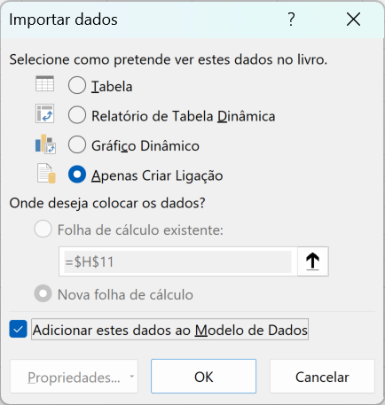
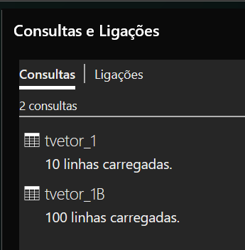
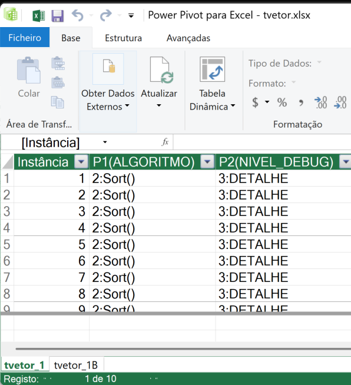
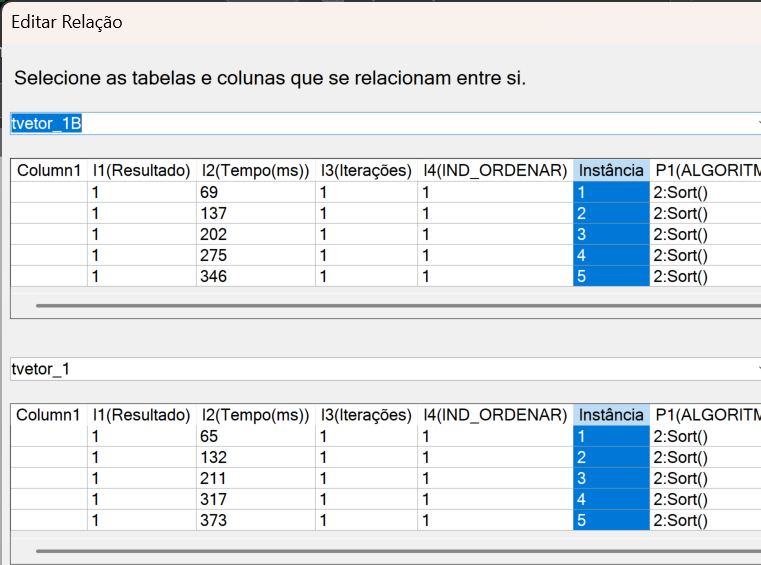
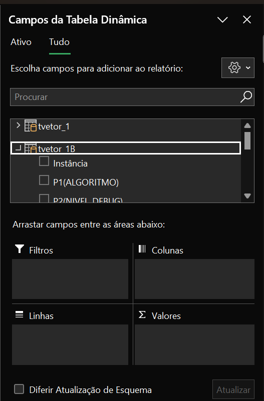
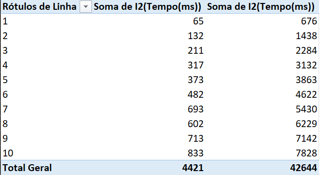

| TesteTVector | Aspirador 1 | Aspirador 2 | Puzzle 8 | 8 Damas | Partição | 8 Damas CI | 8 Damas CP | Partição CB |
Execução de exemplo com base na classe de teste de TVector. Pode acompanhar o teste executando as ações localmente.
No Visual Studio, selecione o projeto TProcura, e execute. No Linux na pasta .../TProcura/Teste$ execute make seguido de ./bin/Release/TProcura
Este exemplo serve para ilustrar as funcionalidades principais de testes paramétricos da classe TProcura. Nos exemplos das subclasses ilustra-se as restantes funcionalidades.
Nota: ao executar no terminal, os parâmetros, indicadores e outros elementos, aparecem com realce de cor para facilitar a leitura.
Sumário
TVector
┌─ ⚙️ Parâmetros ──────────────────────────────────────────────────────
│ P1(ALGORITMO): Add() | P2(NIVEL_DEBUG): NADA | P3(SEMENTE): 1 | P4(LIMITE_TEMPO): 10
│ P5(LIMITE_ITERACOES): 0 | P6(ESTRUTURA_DADOS): TVector
└──────────────────────────────────────────────────────────────────────
Dados #1000000: -498792314 -2114916689 -1334173636 ... 906240738 -1410932558 -1243737237
┌─ ☰ Menu ────────┬────────────────┬─────────────────────┬──────────────┐
│ 1 📄 Instância │ 2 🔍 Explorar │ 3 ⚙️ Parâmetros │ 4 ✔ Solução │
│ 5 ⚖ Indicadores │ 6 ► Executar │ 7 🛠️ Configurações │ 8 🧪 Teste │
└──────────────────┴────────────────┴─────────────────────┴──────────────┘
Opção:
Ao arrancar com o programa sem argumentos, entramos no modo interativo, com o teste manual. Esta é a informação apresentada. Na zona superior aparece o nome do problema (neste caso TVector), seguido de uma caixa com os parametros com os valores atuais. Iremos detalhar os parametrors mais adiante. Segue-se uma zona com informação sobre os dados do problema concreto a resolver, a instância, neste caso é um vetor de números aleatórios, com 1 milhão de elementos. Temos vários algoritmos, em que cada um testa um método da classe TVector. Segue-se uma outra caixa com o menu e os seus 8 comandos, os quais iremos cobrir neste exemplo. Entre os dados e o menu, após ter exsitido uma execução, são apresentados os indicadores relativos à última execução. Iremos detalhar também estes indicadores.
Ação 1: Menu 1 - Instância
Vamos ver o menu 1 instância. Introduza: 1; 2.
Opção: 1
┌─ 📄 Instância ───────────────────────────────────────────────────────
│ ID atual: 1 Intervalo: [1–10]
│ Prefixo atual: 'instancia_'
└──────────────────────────────────────────────────────────────────────
Novo ID (ENTER mantém) ou novo prefixo (texto): 2
TVector
┌─ ⚙️ Parâmetros ──────────────────────────────────────────────────────
│ P1(ALGORITMO): Add() | P2(NIVEL_DEBUG): NADA | P3(SEMENTE): 1 | P4(LIMITE_TEMPO): 10
│ P5(LIMITE_ITERACOES): 0 | P6(ESTRUTURA_DADOS): TVector
└──────────────────────────────────────────────────────────────────────
Dados #2000000: -498792314 -2114916689 -1334173636 ... 1289309513 1347067406 1395724283
┌─ ☰ Menu ────────┬────────────────┬─────────────────────┬──────────────┐
│ 1 📄 Instância │ 2 🔍 Explorar │ 3 ⚙️ Parâmetros │ 4 ✔ Solução │
│ 5 ⚖ Indicadores │ 6 ► Executar │ 7 🛠️ Configurações │ 8 🧪 Teste │
└──────────────────┴────────────────┴─────────────────────┴──────────────┘
Opção:
Este menu permite inicializar os dados utilizados no algoritmo. Esses dados iniciais são a instância, que pode ser gerada aleatoriamente ou fornecido um ficheiro. Temos a indicação do ID da instância atual, que é 1. Estão definidas instâncias de 1 a 10. Essas instâncias significam que o tamanho do vetor é 1 milhão vezes o ID da instância. Ao escolhermos a instância 2, vemos que o vetor fica com 2 milhões de dados. Fizemos a visualização apenas dos primeiros 3 e últimos 3 elementos, mas neste caso é suficiente para sabermos que trocamos de instância, já que os números são diferentes. São diferentes os últimos números, mas os primeiros são iguais, já que não alteramos a semente do gerador aleatório. Podiamos também ter introduzido um texto, para alterar o prefixo atual. Este texto é importante se os dados de teste estivessem em ficheiros. Neste caso fizemos um gerador de dados, geramos os dados aleatoriamente e colocamos no vetor, não é preciso o ficheiro.
Vamos voltar para a instãncia 1, para confirmar que é a mesma, apenas assim se pode garantir que tudo o que se faz em TProcura, é reproduzivel. Introduza: 1; 1.
Opção: 1
┌─ 📄 Instância ───────────────────────────────────────────────────────
│ ID atual: 2 Intervalo: [1–10]
│ Prefixo atual: 'instancia_'
└──────────────────────────────────────────────────────────────────────
Novo ID (ENTER mantém) ou novo prefixo (texto): 1
TVector
┌─ ⚙️ Parâmetros ──────────────────────────────────────────────────────
│ P1(ALGORITMO): Add() | P2(NIVEL_DEBUG): NADA | P3(SEMENTE): 1 | P4(LIMITE_TEMPO): 10
│ P5(LIMITE_ITERACOES): 0 | P6(ESTRUTURA_DADOS): TVector
└──────────────────────────────────────────────────────────────────────
Dados #1000000: -498792314 -2114916689 -1334173636 ... 906240738 -1410932558 -1243737237
┌─ ☰ Menu ────────┬────────────────┬─────────────────────┬──────────────┐
│ 1 📄 Instância │ 2 🔍 Explorar │ 3 ⚙️ Parâmetros │ 4 ✔ Solução │
│ 5 ⚖ Indicadores │ 6 ► Executar │ 7 🛠️ Configurações │ 8 🧪 Teste │
└──────────────────┴────────────────┴─────────────────────┴──────────────┘
Opção:
Notar que a instância é exatamente a mesma, como se pode confirmar pelos números iniciais e finais do vetor.
O menu 2 Explorar, serve para explorar o problema manualmente, mas neste caso não definimos nenhuma função para expplorar os dados. Esta função está definida para as subclasses de TProcura, para os métodos construtivos e melhorativos. Não é necessário definir função nenhuma, e o utilizador pode sempre explorar manualmente o problema, porque não, tentar resolvê-lo, e assim ganhar sensibilidade. Vamos deixar esta exploração para os exemplos das subclasses.
Notar que o menu no modo interativo, é sempre visualizado, colocando-se o prompt "Opção:". Para evitar repetição, vamos omitar o menu no resto deste exemplo.
Ação 2: Menu 3 - Parâmetros
Avançamos para o menu 3 ⚙️ Parâmetros. Introduza: 3.
Opção: 3
┌─ ⚙️ Parâmetros ─────────────────────────────────────────────────────
│ P1(ALGORITMO): Add() (1 a 12)
│ P2(NIVEL_DEBUG): NADA (0 a 4)
│ P3(SEMENTE): 1 (1 a 1000000)
│ P4(LIMITE_TEMPO): 10 (1 a 3600)
│ P5(LIMITE_ITERACOES): 0 (0 a 1000000000)
│ P6(ESTRUTURA_DADOS): TVector (1 a 3)
└──────────────────────────────────────────────────────────────────────
Parametro:
Podemos ver os parametros que já tinhamos visto, mas agora com mais detalhe. Temos o ID do parâmetro, nome do parâmetro, e valor atribuído. O nome dos parametros é igual à macro no código. Alguns parâmetros têm texto quando as opções são categóricas, outros têm números para valores quantitativos. Não existem números reais nos parâmetros, tendo de ser convertidos sempre para inteiros. Mesmo os parâmetros categóricos, têm um número inteiro associado a cada valor. Cada parâmetro tem um intervalo mínimo e máximo em inteiros, que pode tomar.
Vamos ver as opções no parâmetro 1, que é o método a ser executado. Introduza: 1.
Parametro:1
┌─ ⚙️ P1(ALGORITMO) ──────────────────────────────────────────────────
│ Método para teste.
│ 1: Add()
│ 2: Sort()
│ 3: RandomOrder()
│ 4: Invert()
│ 5: BeASet()
│ 6: Difference()
│ 7: Union()
│ 8: Contained()
│ 9: Intersection()
│ 10: operator=()
│ 11: operator+=()
│ 12: nada
└──────────────────────────────────────────────────────────────────────
ALGORITMO (atual 1):
Como o parâmetro é categórico, aparecem todos os valores que pode tomar, juntamente com os seus nomes. Este parâmetro foi povoado na classe CTesteTVector, onde foram definidos estes métodos. A função do parâmetro 1 é sempre escolher o método/algoritmo a executar, mas os métodos/algoritmos variam conforme a subclasse. Ao utilizar uma das subclasses genéricas de TProcura, esta já tem um conjunto de algoritmos implementados, ficando esta lista preenchida.
Caso não pretenda alterar um parâmetro, pode sempre carregar em ENTER para manter o valor atual. Vamos alterar para a ordenação, e de seguida vamos ver o parâmetro 2. Introduza: 2; 2.
ALGORITMO (atual 1): 2
┌─ ⚙️ Parâmetros ─────────────────────────────────────────────────────
│ P1(ALGORITMO): Sort() (1 a 12)
│ P2(NIVEL_DEBUG): NADA (0 a 4)
│ P3(SEMENTE): 1 (1 a 1000000)
│ P4(LIMITE_TEMPO): 10 (1 a 3600)
│ P5(LIMITE_ITERACOES): 0 (0 a 1000000000)
│ P6(ESTRUTURA_DADOS): TVector (1 a 3)
└──────────────────────────────────────────────────────────────────────
Parametro:2
┌─ ⚙️ P2(NIVEL_DEBUG) ────────────────────────────────────────────────
│ Nível de debug, de reduzido a completo.
│ 0: NADA
│ 1: ATIVIDADE
│ 2: PASSOS
│ 3: DETALHE
│ 4: COMPLETO
└──────────────────────────────────────────────────────────────────────
NIVEL_DEBUG (atual 0):
Notar que agora o valor associado a P1 é "Sort()". Ao escolhermos o parâmetro P2 vamos ver o parâmetro que define o nível de debug. Este parâmetro é de TProcura, e não é necessário alterar, a não ser que se pretenda mais que 4 níveis de debug.
Ao alterar este parâmetro, o algoritmo, caso tenha condicionais sobre este parâmetro, irá mostrar os detalhes do que está a fazer. Prevê-se estes níveis, em que o nível 1 deve apresentar apenas um caracter de tempos a tempos, de modo a confirmar-se que o algoritmo está a funcionar. No nível 2 deve-se dar a indicação do passo/iteração em que vai, ou grande passo, no caso do número de iterações ser elevado. No nível 3 detalhe, já é de esperar detalhe sobre todas as iterações. No nivel 4 completo, todo o detalhe deve ser dado em todos os passos, de modo a constituir uma prova de que o resultado é correto.
Estes níveis têm o intuito de poder observar bugs, caso existam. Têm também um carácter didático, já que nas classes de procura, pode-se observar os algoritmos com o nível que se pretender. Assim, está-se a contribuir para a compreensão do algoritmo, aplicado a um dado problema.
No caso do TVector, os algoritmos estão implementados sem debug, pelo que este valor não é utilizado.
Avançamos para o parâmetro P3, "SEMENTE". Introduza: ENTER; 3; 2; ENTER.
┌─ ⚙️ Parâmetros ─────────────────────────────────────────────────────
│ P1(ALGORITMO): Sort() (1 a 12)
│ P2(NIVEL_DEBUG): NADA (0 a 4)
│ P3(SEMENTE): 1 (1 a 1000000)
│ P4(LIMITE_TEMPO): 10 (1 a 3600)
│ P5(LIMITE_ITERACOES): 0 (0 a 1000000000)
│ P6(ESTRUTURA_DADOS): TVector (1 a 3)
└──────────────────────────────────────────────────────────────────────
Parametro:3
┌─ ⚙️ P3(SEMENTE) ────────────────────────────────────────────────────
│ Semente aleatória para inicializar a sequência de números pseudo-aleatórios.
│ Intervalo: 1 a 1000000
└──────────────────────────────────────────────────────────────────────
SEMENTE (atual 1): 2
┌─ ⚙️ Parâmetros ─────────────────────────────────────────────────────
│ P1(ALGORITMO): Sort() (1 a 12)
│ P2(NIVEL_DEBUG): NADA (0 a 4)
│ P3(SEMENTE): 2 (1 a 1000000)
│ P4(LIMITE_TEMPO): 10 (1 a 3600)
│ P5(LIMITE_ITERACOES): 0 (0 a 1000000000)
│ P6(ESTRUTURA_DADOS): TVector (1 a 3)
└──────────────────────────────────────────────────────────────────────
Parametro:
TVector
┌─ ⚙️ Parâmetros ─────────────────────────────────────────────────────
│ P1(ALGORITMO): Sort() | P2(NIVEL_DEBUG): NADA | P3(SEMENTE): 2 | P4(LIMITE_TEMPO): 10
│ P5(LIMITE_ITERACOES): 0 | P6(ESTRUTURA_DADOS): TVector
└──────────────────────────────────────────────────────────────────────
Dados #1000000: -498792314 -2114916689 -1334173636 ... 906240738 -1410932558 -1243737237
...
Opção:
O P3 tem a semente aleatória. No entanto, voltamos ao menu inicial e a instância é a mesma. É preciso inicializar e com esta nova semente, já irá ser criada uma nova instância. Introduza: 1; ENTER.
Opção: 1
┌─ 📄 Instância ───────────────────────────────────────────────────────
│ ID atual: 1 Intervalo: [1–10]
│ Prefixo atual: 'instancia_'
└──────────────────────────────────────────────────────────────────────
Novo ID (ENTER mantém) ou novo prefixo (texto):
TVector
┌─ ⚙️ Parâmetros ──────────────────────────────────────────────────────
│ P1(ALGORITMO): Sort() | P2(NIVEL_DEBUG): NADA | P3(SEMENTE): 2 | P4(LIMITE_TEMPO): 10
│ P5(LIMITE_ITERACOES): 0 | P6(ESTRUTURA_DADOS): TVector
└──────────────────────────────────────────────────────────────────────
Dados #1000000: 277845151 613458960 -1719828728 ... -639822065 75868536 1051675791
...
Opção:
Agora sim, podemos ver que os três primeiros e últimos números são completamente distintos.
Os outros dois parâmetros, o P4 LIMITE_TEMPO, tem o tempo em segundos para o algoritmo executar, e P5 LIMITE_ITERACOES, é um parâmetro genérico para limitar o número de iterações. Como não temos nestes algoritmos definidas iterações, não iremos utilizar.
O P6 é um parâmetro definido na classe CTesteTVector, e tem a estrutura em teste. Introduza: 3; 6.
Opção: 3
┌─ ⚙️ Parâmetros ─────────────────────────────────────────────────────
│ P1(ALGORITMO): Sort() (1 a 12)
│ P2(NIVEL_DEBUG): NADA (0 a 4)
│ P3(SEMENTE): 2 (1 a 1000000)
│ P4(LIMITE_TEMPO): 10 (1 a 3600)
│ P5(LIMITE_ITERACOES): 0 (0 a 1000000000)
│ P6(ESTRUTURA_DADOS): TVector (1 a 3)
└──────────────────────────────────────────────────────────────────────
Parametro:6
┌─ ⚙️ P6(ESTRUTURA_DADOS) ────────────────────────────────────────────
│ Estrutura de dados utilizada para vetor.
│ 1: TVector
│ 2: std::vector
│ 3: TVector/std::algorithm
└──────────────────────────────────────────────────────────────────────
ESTRUTURA_DADOS (atual 1):
Foram definidas 3 opções pela qual os métodos podem ser executados. Utilizando exclusivamente a TVector, a opção atual. A segunda opção é não utilizando TVector, mas sim std::vector e algoritmos da STL equivalentes aos métodos em teste de TVector. A terceira opção é um misto entre utilizar TVector, mas na ordenação e deteção de estados únicos, utilizar os métodos da STL.
Vamos deixar como está. Introduza: ENTER; ENTER.
O menu 4 ✔ Solução será ilustrado com um problema de procura, já que nestes métodos, a solução é o estado do vetor após aplicadas as operações.
Ação 3: Menu 6 - Executar
Avançamos para o menu 6 ► Executar. Introduza: 6.
Opção: 6
═╤═ ► Execução iniciada ═══
├─ Parâmetros ─ P1=2 P2=0 P3=2 P4=10 P5=0 P6=1
═╧═ 🏁 Execução terminada ⏱ 81ms ═══
TVector
┌─ ⚙️ Parâmetros ──────────────────────────────────────────────────────
│ P1(ALGORITMO): Sort() | P2(NIVEL_DEBUG): NADA | P3(SEMENTE): 2 | P4(LIMITE_TEMPO): 10
│ P5(LIMITE_ITERACOES): 0 | P6(ESTRUTURA_DADOS): TVector
└──────────────────────────────────────────────────────────────────────
Dados #1000000: -2147476511 -2147469585 -2147464842 ... 2147468823 2147468881 2147475808
┌─ ⚖ Indicadores ─────────────────────────────────────────────────────
│ I1(Resultado): 1 | I2(Tempo(ms)): 80 | I3(Iterações): 1 | I4(IND_ORDENAR): 1
└──────────────────────────────────────────────────────────────────────
...
Opção:
A execução arranca, os valores dos parâmetros em modo curto são mostrados, e de seguida a execução é terminada. Ao teminar a execução é mostrado o tempo bruto utilizado, neste caso 80 milisegundos. Podemos ver novamente os parâmetros utilizados, tendo sido executado o método Sort(), com a estrutura TVector. O estado do vetor é visivel os três primeiros e últimos elementos, podendo-se confirmar que estes estão por ordem.
Como já houve uma execução, existe agora mais uma linha antes do menu, com os indicadors, I1 a I4.
Os três primeiros indicadores são de TProcura, o quarto indicador é definido em CTesteTVector. O indicador I1 tem o resultado do algoritmo, normalmente ao valor / qualidade da solução, que aqui é sempre 1 a não ser que exista algum problema. O indicador I2 tem o tempo consumido pelo algoritmo, em milisegundos, neste caso 80. Notar que este tempo é apenas de execução, não é contabilizado o tempo de inicialização (ao criar a instância). O tempo de calcular os indicadores não é também comtabilizado. O indicador I3 tem o número de iterações realizadas. O algoritmo deve atualizar as iterações, neste caso ordenou apenas uma vez. Como queremos saber se a operação foi bem sucedida, definiu-se um indicador para testar se o vetor está ordenado. Esse indicador é chamado após o algoritmo, e aqui retorna 1, confirmando que está ordenado. Em outros métodos que não ordenem o vetor, naturalmente que este indicador nesses casos, ao ser chamado irá retornar 0.
Vamos trocar um parâmetro, inicializar e executar novamente. Introduza: 3; 6; 2; ENTER; 1; ENTER; 6.
Opção: 6
═╤═ ► Execução iniciada ═══
├─ Parâmetros ─ P1=2 P2=0 P3=2 P4=10 P5=0 P6=2
═╧═ 🏁 Execução terminada ⏱ 60ms ═══
TVector
┌─ ⚙️ Parâmetros ──────────────────────────────────────────────────────
│ P1(ALGORITMO): Sort() | P2(NIVEL_DEBUG): NADA | P3(SEMENTE): 2 | P4(LIMITE_TEMPO): 10
│ P5(LIMITE_ITERACOES): 0 | P6(ESTRUTURA_DADOS): std::vector
└──────────────────────────────────────────────────────────────────────
Dados #1000000: -2147476511 -2147469585 -2147464842 ... 2147468823 2147468881 2147475808
┌─ ⚖ Indicadores ─────────────────────────────────────────────────────
│ I1(Resultado): 1 | I2(Tempo(ms)): 59 | I3(Iterações): 1 | I4(IND_ORDENAR): 1
└──────────────────────────────────────────────────────────────────────
...
Opção:
Notar que o resultado em termos de dados final é 59, praticamente o mesmo. É natural já que ambas as estruturas de dados receberam a mesma instância. A diferença de tempo em outra execução pode ser diferente.
Ação 4: Menu 5 - Indicadores
Vamos agora ver o menu dos indicadores. Introduza: 5.
Opção: 5
┌─ ⚖ Indicadores ─────────────────────────────────────────────────────
│ I1(Resultado): ☑ 1º lugar
│ Resultado do algoritmo, interpretado conforme o algoritmo (sucesso/insucesso, custo, qualidade, valor, etc.).
│ I2(Tempo(ms)): ☑ 2º lugar
│ Tempo em milisegundos da execução (medida de esforço computacional).
│ I3(Iterações): ☑ 3º lugar
│ Iterações do algoritmo, intrepretadas conforme o algoritmo (medida de esforço independente do hardware).
│ I4(IND_ORDENAR): ☑ 4º lugar
│ verifica se o vetor está ordenado
└──────────────────────────────────────────────────────────────────────
Alterar indicador:
De omissão estão todos os indicadores ligados, e são chamados por ordem de ID. No entanto, por vezes pretende-se verificar a solução, executando verificações/validações. Outras vezes pretende-se obter informação sobre a instância, que nem está relacionada com a execução do algoritmo. Pode-se ainda querer fazer ações após o algoritmo, de transformação da solução, ou gravação da solução para ficheiro.
Com os indicadores é possível definir as ações a executar após o algoritmo, por uma dada ordem, ou se uma dada ação irá ser executada ou não.
Neste caso temos apenas um indicador definido, que é um indicador de verificação, testando se o vetor ficou ordenado.
Com esta interface podemos remover e adicionar indicadores existentes por outra ordem. Vamos por exemplo colocar visivel primeiro I4 e depois I2, não mostrando os restanes.
Introduza: 1;2;3;2;ENTER;1;ENTER;6.
...
┌─ ⚖ Indicadores ─────────────────────────────────────────────────────
│ I1(Resultado): ☐ inativo
│ Resultado do algoritmo, interpretado conforme o algoritmo (sucesso/insucesso, custo, qualidade, valor, etc.).
│ I2(Tempo(ms)): ☑ 2º lugar
│ Tempo em milisegundos da execução (medida de esforço computacional).
│ I3(Iterações): ☐ inativo
│ Iterações do algoritmo, intrepretadas conforme o algoritmo (medida de esforço independente do hardware).
│ I4(IND_ORDENAR): ☑ 1º lugar
│ verifica se o vetor está ordenado
└──────────────────────────────────────────────────────────────────────
Alterar indicador:
...
Opção: 6
═╤═ ► Execução iniciada ═══
├─ Parâmetros ─ P1=2 P2=0 P3=2 P4=10 P5=0 P6=2
═╧═ 🏁 Execução terminada ⏱ 12ms ═══
TVector
┌─ ⚙️ Parâmetros ──────────────────────────────────────────────────────
│ P1(ALGORITMO): Sort() | P2(NIVEL_DEBUG): NADA | P3(SEMENTE): 2 | P4(LIMITE_TEMPO): 10
│ P5(LIMITE_ITERACOES): 0 | P6(ESTRUTURA_DADOS): std::vector
└──────────────────────────────────────────────────────────────────────
Dados #1000000: -2147476511 -2147469585 -2147464842 ... 2147468823 2147468881 2147475808
┌─ ⚖ Indicadores ─────────────────────────────────────────────────────
│ I4(IND_ORDENAR): 1 | I2(Tempo(ms)): 12
└──────────────────────────────────────────────────────────────────────
...
Opção:
Podemos ver que agora apenas I4 seguido de I2 são apresentados. O tempo é também distinto, não tendo sido alterados nenhuns parametros.
Ação 5: Menu 7 - Configurações
Os métodos utilizados até aqui, permitem executar testes confortavelmente sem ter de andar a alterar código, compilar e executar. Pode-se ir registando os dados, e procurar tirar conclusões.
No entanto, execuções particulares podem ser enganadoras, como o tempo de execução da ordenação entre TVector e o sort() da STL. Para existir garantias, temos de fazer muitas execuções, com diferentes parâmetros, e poder processar os resultados posteriormente.
Assim, é crítico que se possa definir confortavelmente todas as configurações a executar, de modo a obter resultados em bloco, e não um a um.
Introduza: 7.
Opção: 7
├─ 🛠️ ─ P1=2 P2=0 P3=2 P4=10 P5=0 P6=2 (parâmetros comuns)
═╪═ Configurações ═══
├─ ⚙️ [1] ─ ⭐ atual
═╧═══════════════════
┌─ 📖 Sintaxe comando ──────────────────────────────────────────────────
│ id / -id - Seleciona configuração como atual ou apaga 'id'
│ Pk = <conj.> - Varia Pk na configuração atual (gera N configs)
│ Pk = <conj.> x Pw = <conj.> - produto externo (gera NxM configs)
│ Sintaxe de <conj.> : A,B,C | A:B | A:B:C
└──────────────────────────────────────────────────────────────────────
✏️ Comando:
Temos aqui a lista dos parâmetros atuais. Há apenas uma configuração, com os parâmetros que alteramos. Se não alterarmos parâmetros, estes tomam o valor de omissão, nunca existindo um parâmetro sem valor definido. Os parâmetros apenas podem ser alterados para valores dentro dos seus limites.
Existe atualmente apenas uma configuração, em que todos os parâmetros são comuns. Vamos colocar o parâmetro P1, com o método, a variar de 1 a 12, para testar todos os métodos.
Introduza: P1=1:12
✏️ Comando: P1=1:12
├─ 🛠️ ─ P2=0 P3=2 P4=10 P5=0 P6=2 (parâmetros comuns)
═╪═ Configurações ═══
├─ ⚙️ [1] ─ P1=2 ⭐ atual
├─ ⚙️ [2] ─ P1=1
├─ ⚙️ [3] ─ P1=3
├─ ⚙️ [4] ─ P1=4
├─ ⚙️ [5] ─ P1=5
├─ ⚙️ [6] ─ P1=6
├─ ⚙️ [7] ─ P1=7
├─ ⚙️ [8] ─ P1=8
├─ ⚙️ [9] ─ P1=9
├─ ⚙️ [10] ─ P1=10
├─ ⚙️ [11] ─ P1=11
├─ ⚙️ [12] ─ P1=12
═╧═══════════════════
┌─ 📖 Sintaxe comando ──────────────────────────────────────────────────
│ id / -id - Seleciona configuração como atual ou apaga 'id'
│ Pk = <conj.> - Varia Pk na configuração atual (gera N configs)
│ Pk = <conj.> x Pw = <conj.> - produto externo (gera NxM configs)
│ Sintaxe de <conj.> : A,B,C | A:B | A:B:C
└──────────────────────────────────────────────────────────────────────
✏️ Comando:
Notar que P1 já não é mostrado nos parâmetros comuns, mas sim os seus diversos valores nas configurações de 1 a 12. A notação 1:12 significa os números de 1 a 12. Se tivessemos colocado 1:12:2 correspondia aos números de 1 a 12 mas em passos de 2. Podiamos ter indicado também com a notação por vírgulas, com 1,2,3,4,5,6,7,8,9,10,11,12. Podemos misturar notações, por exemplo, podiamos especificar o conjunto 1:3,5:9:2,12, ou seja, os números 1,2,3,5,7,9,12.
Se pretendermos alterar apenas o valor de um parâmetro k para V, colocamos Pk=V. Se existirem dois ou mais valores, então pretendemos variar a configuração atual.
Vamos agora colocar dois parâmetros a variar em conjunto, ou seja, estamos interessados no produto externo. Introduza: P3=1:2 x P6=1:3.
✏️ Comando: P3=1:2 x P6=1:3
├─ 🛠️ ─ P2=0 P4=10 P5=0 (parâmetros comuns)
═╪═ Configurações ═══
├─ ⚙️ [1] ─ P1=2 P3=2 P6=2 ⭐ atual
├─ ⚙️ [2] ─ P1=1 P3=2 P6=2
├─ ⚙️ [3] ─ P1=3 P3=2 P6=2
├─ ⚙️ [4] ─ P1=4 P3=2 P6=2
├─ ⚙️ [5] ─ P1=5 P3=2 P6=2
├─ ⚙️ [6] ─ P1=6 P3=2 P6=2
├─ ⚙️ [7] ─ P1=7 P3=2 P6=2
├─ ⚙️ [8] ─ P1=8 P3=2 P6=2
├─ ⚙️ [9] ─ P1=9 P3=2 P6=2
├─ ⚙️ [10] ─ P1=10 P3=2 P6=2
├─ ⚙️ [11] ─ P1=11 P3=2 P6=2
├─ ⚙️ [12] ─ P1=12 P3=2 P6=2
├─ ⚙️ [13] ─ P1=2 P3=1 P6=1
├─ ⚙️ [14] ─ P1=2 P3=2 P6=1
├─ ⚙️ [15] ─ P1=2 P3=1 P6=2
├─ ⚙️ [16] ─ P1=2 P3=1 P6=3
├─ ⚙️ [17] ─ P1=2 P3=2 P6=3
═╧═══════════════════
┌─ 📖 Sintaxe comando ──────────────────────────────────────────────────
│ id / -id - Seleciona configuração como atual ou apaga 'id'
│ Pk = <conj.> - Varia Pk na configuração atual (gera N configs)
│ Pk = <conj.> x Pw = <conj.> - produto externo (gera NxM configs)
│ Sintaxe de <conj.> : A,B,C | A:B | A:B:C
└──────────────────────────────────────────────────────────────────────
✏️ Comando:
Foram dados 2 valores para P3 e 3 valores para P6, tendo sido produzidos mais 5 novas configurações, já que uma é a configuração base (a atual).
Vamos agora utilizar as configurações num teste. Introduza: ENTER.
Avance para a próxima ação.
Ação 6: Menu 8 - Teste
Tendo configurações introduzidas, vamos agora executar um teste com estas configurações. Introduza: 8; 1:3; ENTER.
A primeira pergunta é sobre quais as instâncias a excutar o teste, na qual pretendemos as 3 primeiras. A segunda pergunta é para colocar os resultados num ficheiro de texto, para já não estamos interesados.
Opção: 8
┌─ 📖 Sintaxe comando ────────────────────
│ Instâncias: A,B,C | A:B | A : B : C
└────────────────────────────────────────
📄 IDs das instâncias (1 a 10): 1:3
🗎 Ficheiro resultados (nada para mostrar no ecrã):
═╤═ Instâncias ═══ { 📄1 📄2 📄3 }
├─ 🛠️ ─ P2=0 P4=10 P5=0 (parâmetros comuns)
═╪═ Configurações ═══
├─ ⚙️ [1] ─ P1=2 P3=2 P6=2
├─ ⚙️ [2] ─ P1=1 P3=2 P6=2
├─ ⚙️ [3] ─ P1=3 P3=2 P6=2
│ ...
├─ ⚙️ [15] ─ P1=2 P3=1 P6=2
├─ ⚙️ [16] ─ P1=2 P3=1 P6=3
├─ ⚙️ [17] ─ P1=2 P3=2 P6=3
═╧═══════════════════
═╤═ 🧪 Início do Teste (🖥️ 0) ═══
┌──────┬───────┬───────────┬───────────┐
│ 📄 │ 🛠️ │ 💰 │ ⏱ │
├──────┼───────┼───────────┼───────────┤
│ 1 │ 1 │ 0 │ 63 │
│ 2 │ 1 │ 0 │ 126 │
│ 3 │ 1 │ 0 │ 196 │
│ 1 │ 2 │ 0 │ 3 │
│ 2 │ 2 │ 0 │ 8 │
│ 3 │ 2 │ 0 │ 10 │
│ 1 │ 3 │ 0 │ 3 │
│ 2 │ 3 │ 0 │ 10 │
│ 3 │ 3 │ 0 │ 23 │
│ 1 │ 4 │ 0 │ 0 │
│ 2 │ 4 │ 0 │ 0 │
│ 3 │ 4 │ 0 │ 1 │
│ 1 │ 5 │ 0 │ 61 │
│ 2 │ 5 │ 0 │ 127 │
│ 3 │ 5 │ 0 │ 198 │
│ 1 │ 6 │ 0 │ 129 │
│ 2 │ 6 │ 0 │ 286 │
│ 3 │ 6 │ 0 │ 438 │
│ 1 │ 7 │ 0 │ 131 │
│ 2 │ 7 │ 0 │ 275 │
│ 3 │ 7 │ 0 │ 456 │
│ 1 │ 8 │ 0 │ 148 │
│ 2 │ 8 │ 0 │ 357 │
│ 3 │ 8 │ 0 │ 422 │
│ 1 │ 9 │ 0 │ 141 │
│ 2 │ 9 │ 0 │ 275 │
│ 3 │ 9 │ 0 │ 452 │
│ 1 │ 10 │ 0 │ 0 │
│ 2 │ 10 │ 0 │ 1 │
│ 3 │ 10 │ 0 │ 1 │
│ 1 │ 11 │ 0 │ 0 │
│ 2 │ 11 │ 0 │ 0 │
│ 3 │ 11 │ 0 │ 21 │
│ 1 │ 12 │ 0 │ 0 │
│ 2 │ 12 │ 0 │ 0 │
│ 3 │ 12 │ 0 │ 0 │
│ 1 │ 13 │ 0 │ 69 │
│ 2 │ 13 │ 0 │ 157 │
│ 3 │ 13 │ 0 │ 230 │
│ 1 │ 14 │ 0 │ 67 │
│ 2 │ 14 │ 0 │ 145 │
│ 3 │ 14 │ 0 │ 251 │
│ 1 │ 15 │ 0 │ 60 │
│ 2 │ 15 │ 0 │ 130 │
│ 3 │ 15 │ 0 │ 200 │
│ 1 │ 16 │ 0 │ 62 │
│ 2 │ 16 │ 0 │ 134 │
│ 3 │ 16 │ 0 │ 193 │
│ 1 │ 17 │ 0 │ 60 │
│ 2 │ 17 │ 0 │ 128 │
│ 3 │ 17 │ 0 │ 196 │
└──────┴───────┴───────────┴───────────┘
┌─ 📊 Total 🛠️ 1 ──────────────────────────────────────────────────────
│ IND_ORDENAR: 3 Tempo(ms): 385 Instâncias resolvidas: 3
└──────────────────────────────────────────────────────────────────────
┌─ 📊 Total 🛠️ 2 ──────────────────────────────────────────────────────
│ IND_ORDENAR: 0 Tempo(ms): 21 Instâncias resolvidas: 3
└──────────────────────────────────────────────────────────────────────
┌─ 📊 Total 🛠️ 3 ──────────────────────────────────────────────────────
│ IND_ORDENAR: 0 Tempo(ms): 36 Instâncias resolvidas: 3
└──────────────────────────────────────────────────────────────────────
┌─ 📊 Total 🛠️ 4 ──────────────────────────────────────────────────────
│ IND_ORDENAR: 0 Tempo(ms): 1 Instâncias resolvidas: 3
└──────────────────────────────────────────────────────────────────────
┌─ 📊 Total 🛠️ 5 ──────────────────────────────────────────────────────
│ IND_ORDENAR: 3 Tempo(ms): 386 Instâncias resolvidas: 3
└──────────────────────────────────────────────────────────────────────
┌─ 📊 Total 🛠️ 6 ──────────────────────────────────────────────────────
│ IND_ORDENAR: 3 Tempo(ms): 853 Instâncias resolvidas: 3
└──────────────────────────────────────────────────────────────────────
┌─ 📊 Total 🛠️ 7 ──────────────────────────────────────────────────────
│ IND_ORDENAR: 3 Tempo(ms): 862 Instâncias resolvidas: 3
└──────────────────────────────────────────────────────────────────────
┌─ 📊 Total 🛠️ 8 ──────────────────────────────────────────────────────
│ IND_ORDENAR: 3 Tempo(ms): 927 Instâncias resolvidas: 3
└──────────────────────────────────────────────────────────────────────
┌─ 📊 Total 🛠️ 9 ──────────────────────────────────────────────────────
│ IND_ORDENAR: 3 Tempo(ms): 868 Instâncias resolvidas: 3
└──────────────────────────────────────────────────────────────────────
┌─ 📊 Total 🛠️ 10 ─────────────────────────────────────────────────────
│ IND_ORDENAR: 0 Tempo(ms): 2 Instâncias resolvidas: 3
└──────────────────────────────────────────────────────────────────────
┌─ 📊 Total 🛠️ 11 ─────────────────────────────────────────────────────
│ IND_ORDENAR: 0 Tempo(ms): 21 Instâncias resolvidas: 3
└──────────────────────────────────────────────────────────────────────
┌─ 📊 Total 🛠️ 12 ─────────────────────────────────────────────────────
│ IND_ORDENAR: 0 Tempo(ms): 0 Instâncias resolvidas: 3
└──────────────────────────────────────────────────────────────────────
┌─ 📊 Total 🛠️ 13 ─────────────────────────────────────────────────────
│ IND_ORDENAR: 3 Tempo(ms): 456 Instâncias resolvidas: 3
└──────────────────────────────────────────────────────────────────────
┌─ 📊 Total 🛠️ 14 ─────────────────────────────────────────────────────
│ IND_ORDENAR: 3 Tempo(ms): 463 Instâncias resolvidas: 3
└──────────────────────────────────────────────────────────────────────
┌─ 📊 Total 🛠️ 15 ─────────────────────────────────────────────────────
│ IND_ORDENAR: 3 Tempo(ms): 390 Instâncias resolvidas: 3
└──────────────────────────────────────────────────────────────────────
┌─ 📊 Total 🛠️ 16 ─────────────────────────────────────────────────────
│ IND_ORDENAR: 3 Tempo(ms): 389 Instâncias resolvidas: 3
└──────────────────────────────────────────────────────────────────────
┌─ 📊 Total 🛠️ 17 ─────────────────────────────────────────────────────
│ IND_ORDENAR: 3 Tempo(ms): 384 Instâncias resolvidas: 3
└──────────────────────────────────────────────────────────────────────
🏆 Torneio (#instâncias melhores):
|-01-|-02-|-03-|-04-|-05-|-06-|-07-|-08-|-09-|-10-|-11-|-12-|-13-|-14-|-15-|-16-|-17-|
1 | -2 | -2 | -2 | 0 | 2 | 2 | 2 | 2 | -2 | -2 | -2 | 0 | 0 | 0 | 0 | 0 | -4
|----|----|----|----|----|----|----|----|----|----|----|----|----|----|----|----|----|
2 2 | | 0 | 0 | 2 | 3 | 3 | 3 | 3 | 0 | 0 | 0 | 2 | 2 | 2 | 2 | 2 | 26
|----|----|----|----|----|----|----|----|----|----|----|----|----|----|----|----|----|
3 2 | 0 | | 0 | 2 | 3 | 3 | 3 | 3 | 0 | 0 | 0 | 2 | 2 | 2 | 2 | 2 | 26
|----|----|----|----|----|----|----|----|----|----|----|----|----|----|----|----|----|
4 2 | 0 | 0 | | 2 | 3 | 3 | 3 | 3 | 0 | 0 | 0 | 2 | 2 | 2 | 2 | 2 | 26
|----|----|----|----|----|----|----|----|----|----|----|----|----|----|----|----|----|
5 0 | -2 | -2 | -2 | | 2 | 2 | 2 | 2 | -2 | -2 | -2 | 0 | 0 | 0 | 0 | 0 | -4
|----|----|----|----|----|----|----|----|----|----|----|----|----|----|----|----|----|
6 -2 | -3 | -3 | -3 | -2 | | 0 | 0 | 0 | -3 | -3 | -3 | -2 | -2 | -2 | -2 | -2 |-32
|----|----|----|----|----|----|----|----|----|----|----|----|----|----|----|----|----|
7 -2 | -3 | -3 | -3 | -2 | 0 | | 0 | 0 | -3 | -3 | -3 | -2 | -2 | -2 | -2 | -2 |-32
|----|----|----|----|----|----|----|----|----|----|----|----|----|----|----|----|----|
8 -2 | -3 | -3 | -3 | -2 | 0 | 0 | | 0 | -3 | -3 | -3 | -2 | -2 | -2 | -2 | -2 |-32
|----|----|----|----|----|----|----|----|----|----|----|----|----|----|----|----|----|
9 -2 | -3 | -3 | -3 | -2 | 0 | 0 | 0 | | -3 | -3 | -3 | -2 | -2 | -2 | -2 | -2 |-32
|----|----|----|----|----|----|----|----|----|----|----|----|----|----|----|----|----|
10 2 | 0 | 0 | 0 | 2 | 3 | 3 | 3 | 3 | | 0 | 0 | 2 | 2 | 2 | 2 | 2 | 26
|----|----|----|----|----|----|----|----|----|----|----|----|----|----|----|----|----|
11 2 | 0 | 0 | 0 | 2 | 3 | 3 | 3 | 3 | 0 | | 0 | 2 | 2 | 2 | 2 | 2 | 26
|----|----|----|----|----|----|----|----|----|----|----|----|----|----|----|----|----|
12 2 | 0 | 0 | 0 | 2 | 3 | 3 | 3 | 3 | 0 | 0 | | 2 | 2 | 2 | 2 | 2 | 26
|----|----|----|----|----|----|----|----|----|----|----|----|----|----|----|----|----|
13 0 | -2 | -2 | -2 | 0 | 2 | 2 | 2 | 2 | -2 | -2 | -2 | | 0 | 0 | 0 | 0 | -4
|----|----|----|----|----|----|----|----|----|----|----|----|----|----|----|----|----|
14 0 | -2 | -2 | -2 | 0 | 2 | 2 | 2 | 2 | -2 | -2 | -2 | 0 | | 0 | 0 | 0 | -4
|----|----|----|----|----|----|----|----|----|----|----|----|----|----|----|----|----|
15 0 | -2 | -2 | -2 | 0 | 2 | 2 | 2 | 2 | -2 | -2 | -2 | 0 | 0 | | 0 | 0 | -4
|----|----|----|----|----|----|----|----|----|----|----|----|----|----|----|----|----|
16 0 | -2 | -2 | -2 | 0 | 2 | 2 | 2 | 2 | -2 | -2 | -2 | 0 | 0 | 0 | | 0 | -4
|----|----|----|----|----|----|----|----|----|----|----|----|----|----|----|----|----|
17 0 | -2 | -2 | -2 | 0 | 2 | 2 | 2 | 2 | -2 | -2 | -2 | 0 | 0 | 0 | 0 | | -4
|----|----|----|----|----|----|----|----|----|----|----|----|----|----|----|----|----|
═╧═ 🏁 Fim do Teste (🖥️ 0 ⏱ 7" 318ms ) ═══
,,,
Opção:
As instâncias utilizadas e as configurações atuais são mostradas logo de início, para clarificar o que vai ser executado no teste e poder identificar algum problema.
Podemos ver que durante a execução, nada é mostrado, sendo mostrados os resultados dos testes no final.
O parametro P2(NIVEL_DEBUG) controla do debug do algoritrmo durante a execução simples, no comando 6. Num teste o debug do algoritmo é sempre colocado a 0, sendo este parametro utilizado para mostrar informações do teste.
Como o teste foi rápido, não havia muito a mostrar, mas ao executar um teste longo, é importante que saiba o estado atual do teste.
No final é mostrada primeiramente uma tabela de resultados, com apenas o custo e tempo, por cada instância e configuração em teste. Como o custo não está nos indicadores calculados, ficou a zero, caso contrário ficaria a 1 já que foi assim que definimos nesta instância para sucesso.
Seguem-se os totais por configuração, e um torneio entre configurações, sendo contabilizada vitória para a configuração que tiver melhores resultados em mais instâncias.
O detalhe dos parametros em cada configuração é replicado no final, para associar os resultados aos parametros utilizados.
Infelizmente, pouco podemos concluir com este teste. O motivo é que não tinhamos uma pergunta formulada, mas solicitamos simplesmente execuções com diversas configurações. Sabemos apenas que não há crash.
Vamos procurar fazer um teste mais estruturado. Pretendemos fazer um teste de performance, na operação de ordenação. Queremos saber como varia o tempo na operação de ordenação, com o tamanho do vetor.
Poderiamos estar a apagar as configurações uma a uma, mas vamos arrancar de novo, para não ter qualquer configuração. Vamos agora colocar a informação de debug no máximo. Introduza após arrancar: 7; P1=2 P2=4; ENTER; 8; 1:10; ENTER.
Opção: 8
┌─ 📖 Sintaxe comando ────────────────────
│ Instâncias: A,B,C | A:B | A : B : C
└────────────────────────────────────────
📄 IDs das instâncias (1 a 10): 1:10
🗎 Ficheiro resultados (nada para mostrar no ecrã):
═╤═ Instâncias ═══ { 📄1 📄2 📄3 📄4 📄5 📄6 📄7 📄8 📄9 📄10 }
├─ 🛠️ ─ P1=2 P2=4 P3=1 P4=10 P5=0 P6=1 (parâmetros comuns)
═╪═ Configurações ═══
├─ ⚙️ [1] ─
═╧═══════════════════
═╤═ 🧪 Início do Teste (🖥️ 0) ═══
├─ 📋 Tarefas:10 📄 Instâncias: 10 🛠️ Configurações: 1 🖥️ Processos: 1.
├─ ⏱ 📋 1 📄 1 🛠️ 1 🖥️ 1 🎯 1 ⚖ 1 62 1 1
├─ ⏱ 71ms 📋 2 📄 2 🛠️ 1 🖥️ 1 🎯 1 ⚖ 1 131 1 1
├─ ⏱ 225ms 📋 3 📄 3 🛠️ 1 🖥️ 1 🎯 1 ⚖ 1 224 1 1
├─ ⏱ 483ms 📋 4 📄 4 🛠️ 1 🖥️ 1 🎯 1 ⚖ 1 315 1 1
├─ ⏱ 845ms 📋 5 📄 5 🛠️ 1 🖥️ 1 🎯 1 ⚖ 1 518 1 1
├─ ⏱ 1" 444ms 📋 6 📄 6 🛠️ 1 🖥️ 1 🎯 1 ⚖ 1 452 1 1
├─ ⏱ 2" 6ms 📋 7 📄 7 🛠️ 1 🖥️ 1 🎯 1 ⚖ 1 513 1 1
├─ ⏱ 2" 603ms 📋 8 📄 8 🛠️ 1 🖥️ 1 🎯 1 ⚖ 1 660 1 1
├─ ⏱ 3" 372ms 📋 9 📄 9 🛠️ 1 🖥️ 1 🎯 1 ⚖ 1 686 1 1
├─ ⏱ 4" 160ms 📋 10 📄 10 🛠️ 1 🖥️ 1 🎯 1 ⚖ 1 786 1 1
┌──────┬───────┬───────────┬───────────┐
│ 📄 │ 🛠️ │ 💰 │ ⏱ │
├──────┼───────┼───────────┼───────────┤
│ 1 │ 1 │ 1 │ 62 │
│ 2 │ 1 │ 1 │ 131 │
│ 3 │ 1 │ 1 │ 224 │
│ 4 │ 1 │ 1 │ 315 │
│ 5 │ 1 │ 1 │ 518 │
│ 6 │ 1 │ 1 │ 452 │
│ 7 │ 1 │ 1 │ 513 │
│ 8 │ 1 │ 1 │ 660 │
│ 9 │ 1 │ 1 │ 686 │
│ 10 │ 1 │ 1 │ 786 │
└──────┴───────┴───────────┴───────────┘
┌─ 📊 Total 🛠️ 1 ──────────────────────────────────────────────────────
│ Resultado: 10 Tempo(ms): 4347 Iterações: 10 IND_ORDENAR: 10 Instâncias resolvidas: 10
└──────────────────────────────────────────────────────────────────────
🏆 Torneio (#instâncias melhores):
|-01-|
1 | 0
|----|
═╧═ 🏁 Fim do Teste (🖥️ 0 ⏱ 5" 79ms ) ═══
TVector
...
Opção:
A informação debug completa mostra por cada execução uma linha. Em cada linha é identificado o instante, tarefa, instância, configuração, processo e finalmente os indicadores calculados.
Sobre os resultados mostrados em tabela, podemos ver que o tempo sobe, mas não de forma linear. A instância 1 tem 1 milhão de valores, leva 62 milisegundos. A instância 10 tem 10 vezes mais tamanho, mas leva 786 milisegundos. Foram execuções únicas, os valores podem variar demasiado.
Vamos colocar 10 instâncias de cada tipo, variando a semente, para assim ter mais precisão. Queremos desta vez ter os resultados no Excel (utilizando a pasta Resultados) e vamos colocar o debug a 1.
Introduza: 7; P1=2; P2=1; P3=1:10; ENTER; 8; 1:10; Resultados/tvetor_0.
Opção: 8
┌─ 📖 Sintaxe comando ────────────────────
│ Instâncias: A,B,C | A:B | A : B : C
└────────────────────────────────────────
📄 IDs das instâncias (1 a 10): 1:10
🗎 Ficheiro resultados (nada para mostrar no ecrã): Resultados/tvetor_0
═╤═ Instâncias ═══ { 📄1 📄2 📄3 📄4 📄5 📄6 📄7 📄8 📄9 📄10 }
├─ 🛠️ ─ P1=2 P2=1 P4=10 P5=0 P6=1 (parâmetros comuns)
═╪═ Configurações ═══
├─ ⚙️ [1] ─ P3=1
├─ ⚙️ [2] ─ P3=2
├─ ⚙️ [3] ─ P3=3
├─ ⚙️ [4] ─ P3=4
├─ ⚙️ [5] ─ P3=5
├─ ⚙️ [6] ─ P3=6
├─ ⚙️ [7] ─ P3=7
├─ ⚙️ [8] ─ P3=8
├─ ⚙️ [9] ─ P3=9
├─ ⚙️ [10] ─ P3=10
═╧═══════════════════
═╤═ 🧪 Início do Teste (🖥️ 0) ═══
├─ 📋 Tarefas:100 📄 Instâncias: 10 🛠️ Configurações: 10 🖥️ Processos: 1.
├─ 🗎 Ficheiro Resultados/tvetor_0.csv gravado.
│ ⏱ Tempo real: 46" 488ms
│ ⏱ CPU total: 46" 488ms
│ 📊 Utilização: 100.0%
═╧═ 🏁 Fim do Teste (🖥️ 0 ⏱ 46" 498ms ) ═══
...
Opção:
Podemos ver uma primeira linha indicando que há 100 tarefas, 10 instâncias, 10 configurações e 1 processo, já que não estamos a executar em MPI. Existe a indicação que o ficheiro Resultados/tvetor_01.csv foi gravado, em vez da tabela de resultados final da execução anterior. No final é dado o tempo real, o tempo total de CPU e a utilização, que neste caso é 100% já que é um programa em série.
O ficheiro está pronto para fazermos uma análise com os relatórios dinâmicos. Colocando a instância nas linhas, e o tempo no conteúdo, deverá ser visivel o tempo crescente de forma estável, um pouco acima de linear.
Ação 7: Linha de comando
Embora o modo interativo seja útil no desenvolvimento do algoritmo ou problema, os testes paramétricos é que nos vão suportar uma resposta a algum tipo de hipótese formada.
A linha de comando é normalmente mais simples, para por um lado poder colocar a correr num servidor, por outro, pode ver exatamente o teste solicitado numa só linha, não estando dependente da interação do utilizador.
Vamos neste e nos testes seguintes, utilizar o modelo de teste descrito em Testes de Algoritmos com o TProcura
Vamos recomeçar, sendo o primeiro passo conhecer os parametros e indicadores disponíveis.
Abra a linha de comando, localize o executável, e execute com argumento "-h". Vamos executar na pasta Teste, pelo que funcionará a linha (Windows usar x64 Linux bin):
.../TProcura/Teste$ ../bin/Release/TProcura -h
Para simplificidade, omitimos a pasta e path do executável.
./bin/Release/TProcura -h
Uso: ./bin/Release/TProcura <instâncias> [opções]
<instâncias> Conjunto de IDs: A | A,B,C | A:B[:C]
Opções:
-R <ficheiro> Nome do CSV de resultados (omissão: resultados.csv)
-F <prefixo> Prefixo dos ficheiros de instância (omissão: instancia_)
-M <modo> Modo MPI: 0 = divisão estática, 1 = gestor-trabalhador
-I <ind> Lista de indicadores (e.g. 2,1,3)
-h Esta ajuda
-P <expr> Parâmetros (e.g. P1=1:3 x P2=0:2) - último campo
Exemplo: ./bin/Release/TProcura 1:5 -R out -F fich_ -I 3,1,4,2 -P P1=1:5 x P6=1,2
Executar sem argumentos entra em modo interativo, para explorar todos os parametros e indicadores
Lista de parâmetros:
┌─ ⚙️ Parâmetros ──────────────────────────────────────────────────────
│ P1(ALGORITMO): Add() ( 1 a 12)
│ P2(NIVEL_DEBUG): NADA ( 0 a 4)
│ P3(SEMENTE): 1 ( 1 a 1000000)
│ P4(LIMITE_TEMPO): 10 ( 1 a 3600)
│ P5(LIMITE_ITERACOES): 0 ( 0 a 1000000000)
│ P6(ESTRUTURA_DADOS): TVector ( 1 a 3)
└──────────────────────────────────────────────────────────────────────
Lista de indicadores:
┌─ ⚖ Indicadores ─────────────────────────────────────────────────────
│ I1(Resultado): ☑ 1º lugar
│ Resultado do algoritmo, interpretado conforme o algoritmo (sucesso/insucesso, custo, qualidade, valor, etc.).
│ I2(Tempo(ms)): ☑ 2º lugar
│ Tempo em milisegundos da execução (medida de esforço computacional).
│ I3(Iterações): ☑ 3º lugar
│ Iterações do algoritmo, intrepretadas conforme o algoritmo (medida de esforço independente do hardware).
│ I4(IND_ORDENAR): ☑ 4º lugar
│ verifica se o vetor está ordenado
└──────────────────────────────────────────────────────────────────────
Podemos ver os parametros específicos do programa, e também a lista completa de parametros e indicadores do algoritmo. Assim podemos saber o que utilizar na definição das configurações de execução.
Teste: tvetor_1
Podemos neste teste reproduzir o teste anterior de acordo com o modelo de Teste. Nesse teste queremos saber como varia o tempo na operação de ordenação, com o tamanho do vetor, ou seja, pretendemos um teste de performance.
- Tipo de Teste / Objetivo: Performance (tempo vs tamanho)
- Definição: Instâncias: 1:10; Configurações: P1=2
- Esforço: P3=1; P3=1:10; P3=1:100
- Execução: TProcura 1:10 -R Resultados/tvetor_1 -P P1=2 P2=3 P3=1
Vamos explicar estes pontos. Temos primeiramente o teste identificado pelo nome do problema, seguido pelo ID do teste: tvetor_1. Existindo outros testes, têm ID incremental e não colidem com este nome. É identificado que se pretende um teste de performance, e estamos interesados em medir o tempo pelo tamanho. Como o tamanho é dado pelo ID da instância, basta variar a instância e temos os resultados para o teste de Performance. Na definição do teste, para além das instâncias, fixamos a operação definida em P1 para 2, que é a ordenação. Define-se ainda como repetir o teste com esforços distintos, para maior precisão.
Este teste foi já realizado duas vezes, uma com 1 execução em cada instância, outra com 10. Mas basicamente foram o mesmo teste. Aqui considera-se que são versões distintas (A, B, C) do mesmo teste. É simples e suficiente alterar P3 para aumentar o esforço, dado que as instâncias são geradas aleatoriamente, alterando a semente altera-se a instância.
Finalmente a execução tem os argumentos a colocar na linha de comando, não ficando o teste dependente da correta interação com o programa para que este seja bem introduzido. Um simples copy/paste garante que o teste irá ser reproduzido à risca. Nesta linha apenas P2 é livre.
Subimos o nível de debug (P2) de 1 para 3, já que o nível 2 apenas reporta de minuto a minuto. Tal como o modo teste, na execução via linha de comando, o algoritmo executa sempre com debug nível 0, de modo a obter os melhores tempos. O parametro de debug é apenas para visualizar o andamento do teste.
/TProcura/Teste$ ./bin/Release/TProcura 1:10 -R Resultados/tvetor_1 -P P1=2 P2=3 P3=1
═╤═ Instâncias ═══ { 📄1 📄2 📄3 📄4 📄5 📄6 📄7 📄8 📄9 📄10 }
├─ 🛠️ ─ P1=2 P2=3 P3=1 P4=10 P5=0 P6=1 (parâmetros comuns)
═╪═ Configurações ═══
├─ ⚙️ [1] ─
═╧═══════════════════
═╤═ 🧪 Início do Teste (🖥️ 0) ═══
├─ 📋 Tarefas:10 📄 Instâncias: 10 🛠️ Configurações: 1 🖥️ Processos: 1.
├─ 🗎 Ficheiro Resultados/tvetor_1.csv gravado.
│ ⏱ Tempo real: 5" 149ms
│ ⏱ CPU total: 5" 149ms
│ 📊 Utilização: 100.0%
═╧═ 🏁 Fim do Teste (🖥️ 0 ⏱ 5" 156ms ) ═══
No arranque, como habitualmente, são mostradas as instâncias e configurações, de modo a que possa ser detectado um erro, e abortado o teste se necessário.
O teste arranca normalmente, e pára aos 5 segundos dado que o teste é no modo base. Vamos fazer também a versão com esforço B, para podermos ficar com a situação que tinhamos no modo interativo.
/TProcura/Teste$ ./bin/Release/TProcura 1:10 -R Resultados/tvetor_1B -P P1=2 P2=3 P3=1:10
═╤═ Instâncias ═══ { 📄1 📄2 📄3 📄4 📄5 📄6 📄7 📄8 📄9 📄10 }
├─ 🛠️ ─ P1=2 P2=3 P4=10 P5=0 P6=1 (parâmetros comuns)
═╪═ Configurações ═══
├─ ⚙️ [1] ─ P3=1
├─ ⚙️ [2] ─ P3=2
├─ ⚙️ [3] ─ P3=3
├─ ⚙️ [4] ─ P3=4
├─ ⚙️ [5] ─ P3=5
├─ ⚙️ [6] ─ P3=6
├─ ⚙️ [7] ─ P3=7
├─ ⚙️ [8] ─ P3=8
├─ ⚙️ [9] ─ P3=9
├─ ⚙️ [10] ─ P3=10
═╧═══════════════════
═╤═ 🧪 Início do Teste (🖥️ 0) ═══
├─ 📋 Tarefas:100 📄 Instâncias: 10 🛠️ Configurações: 10 🖥️ Processos: 1.
├─ ⏱ 10" 364ms 📋 25 📄 5 🛠️ 3 🖥️ 1
├─ ⏱ 20" 411ms 📋 46 📄 6 🛠️ 5 🖥️ 1
├─ ⏱ 30" 764ms 📋 66 📄 6 🛠️ 7 🖥️ 1
├─ ⏱ 40" 881ms 📋 88 📄 8 🛠️ 9 🖥️ 1
├─ 🗎 Ficheiro Resultados/tvetor_1B.csv gravado.
│ ⏱ Tempo real: 47" 572ms
│ ⏱ CPU total: 47" 572ms
│ 📊 Utilização: 100.0%
═╧═ 🏁 Fim do Teste (🖥️ 0 ⏱ 47" 579ms ) ═══
O tempo total sido de 47 segundos. Com debug a 0 não iriamos ter nenhum input senão após o teste terminar. Podemos ver com nível 3 um report a cada 10 segundos, com o número da tarefa atual, o número da instância atual, configuração atual e número de processos. Assim podemos ir vendo o andamento dos testes.
No final temos a mesmoa informação final que nos testes em modo interativo. São em tudo iguais, a diferença aqui é termos utilizado o debug nível 3.
É preciso referenciar o hardware utilizado. Ao não ser num cluster em que o hardware é preparado para execuções, torna-se complicada a reprodução fiel, principalmente se o tempo é um indicador em estudo, como é este caso. Outras aplicações podem estar a executar e velocidade do CPU variável, podem enviesar os resultados, o que foi o caso estas execuções.
- hardware: 11th Gen Intel(R) Core(TM) i7-1185G7 @ 3.00GHz, RAM 16.0 GB (4267 MT/s)
Análise e Conclusões
Os dois ficheiros produzidos, Resultados/tvetor_1.csv e Resultados/tvetor_1B.csv, podem ser importados e analisados com qualquer software adequado, de modo a obter-se gráficos e tabelas que permitam observar o que se pretende, e permitam realizar testes estatísticos.
Vamos utilizar o MS Excel, fazendo uso de importação de ficheiros para modelo de dados, criação de gráficos e relatórios dinâmicos, e criação de medidas DAX.
- Ficheiro de Análise: tvetor.xlsx
Passo a passo da importação e análise no Excel
Criamos um só ficheiro de análise, independente do número de testes. Por esse motivo tem o nome único com o nome do problema.
- Importação CSV: importar todos os ficheiros CSV criados para modelo de dados.
- Dados > Obter Dados > De Ficheiro > De Texto/CSV > tvetor_1.csv
Os dados devem estar corretos, caso o separador ou codificação não seja corretamente identificada, corrigir. Vamos no entanto carregar para modelo de dados, e não direto para o Excel. A vantagem deste passo torna-se evidênte em ficheiros grandes, reduzindo consideravelmente o tamanho do ficheiro de Excel, e não existindo limite de 1 milhão de linhas.
Para colocar os dados no modelo de dados, temos de selecionar a opção "Carregar Para..."
Na janela optamos por ligação apenas e adicionar ao modelo de dados: 
Este processo tem de ser repetido para os restantes ficheiros a processar, neste caso tvetor_1B.csv
Após o carregamento vemos as consultas e ligações com os ficheiros carregados, com 10 e 100 linhas: 
Caso não apareça ou tenha sido fechada, esta caixa pode ser ligada em
- Dados > Consultas e Ligações
O menu de contexto numa dessas ligações permite editar e alterar o que for necessário na consulta, ou voltar a carregar o ficheiro caso tenha sido refrescado.
O friso "Power Pivot" é também importante, para estabelecer a ligação entre as duas consultas:
Neste menu vamos para já para Gerir 
Nesta janela podemos ver as consultas em baixo, com as colunas no modelo de dados. Iremos voltar aqui para adicionar variáveis calculadas, se necessário. Para já vamos para:
- Estrutura > Relações > Criar Relação
Podemos fazer uma relação entre as duas consultas, com base na instância: 
Esta relação permite que se utilize dados de ambas as consultas, num mesmo relatório dinâmico. Apenas podemos fazer esta operação porque uma das consultas tem uma linha por cada instância.
Estamos prontos para criar uma tabela dinâmica:
- Inserir > Tabela Dinâmica > A partir de modelo de dados
Ficamos com uma tabela dinâmica, em que podemos utilizar todos os campos das consultas que estão no modelo de dados: 
Vamos obter o gráfico em bruto da performance:
- Linhas: Instância (usar a coluna de tvetor_1)
- Valores: I2 de ambas as consultas
Obtemos a primeira tabela de resultados: 
Naturalmente que uma das colunas tem 10 execuções a outra 1. Podemos observar:
- há um efeito não linear, atendendo a que a instância 1 leva 65 ou 67,6 millisegundos a executar, enquanto a instância 10 com 10 vezes o tamanho, leva mais que 10 vezes o tempo
- os resultados de ambas as execuções não batem muito certo. Assim, o que é certo é que os valores obtidos são incertos.
Na execução com 10 corridas, podemos procurar obter a média e intervalo de confiança, com medidas DAX. Para tal, é preciso adicionar medidas DAX na tabela tvetor_1B.
Passo a passo da implementação do intervalo de confiança no Excel
Vamos começar pela média do tempo. Pode-se adicionar novas medidas adicionando nos Campos da Tabela Dinâmica, no menu de contexto da consulta, ou no Power Pivot > Medidas > Nova Medida
- MédiaTempo = AVERAGE([I2(Tempo(ms))])
- N = COUNTROWS(tvetor_1B)
- DesvioPadrao = STDEV.S([I2(Tempo(ms))])
- ErroPadrao = [DesvioPadrao] / SQRT([N])
- IC_Inf = [MédiaTempo] - 1.96 * [ErroPadrao]
- IC_Sup = [MédiaTempo] + 1.96 * [ErroPadrao]
Nota: o valor de N deveria ser 30 ou superior, para ser utilizado o valor 1.96 para 95% de confiança.
Assim podemos obter uma informação mais precisa, dos dados que temos:
Vemos que o intervalo de confiança de até 50 millisegundos, pelo que há relativa certeza nas décimas de segundo. O intervalo de confiança foi por vezes violado considerando a execução base, o que é normal utilizando 95% de confiança, em que 1 em cada 20 casos irá estar fora do intervalo. Por outro lado N é inferior a 30, e também o facto de se utilizar um computador local, duas corridas em alturas distintas podem estar sujeitas a processos em paralelo distintos, e ter enviasamento do tempo.
Melhores resultados serão obtidos numa excecução num cluster, e com N superior.
As medidas DAX permitem o calculo da estatística pretendida, embora dê algum trabalho a criar as variáveis, fica automaticamente recalculada para os filtros que pretendermos.
Podemos confirmar que há um efeito não linear no tempo. Mesmo considerando os intervalos máximo para a instância 1, 71,1 millisegundos, 10 vezes este tempo fica fora do intervalo de tempo da instância 10, que tem no mínimo 755 millisegundos.
Vamos avançar para o próximo teste.
Teste: tvetor_2
Pretendemos agora, considerando todas as operações em teste, procurar saber se há diferença entre alguma das estruturas de dados em termos de tempo. Estamos portanto perante um teste paramétrico.
- Tipo de Teste / Objetivo: Paramétrico (P6(ESTRUTURA_DADOS) vs P1(ALGORITMO) - irrelevante?)
- Definição: Instâncias: 1:10; Configurações: P1=1:12 x P6=1:3
- Esforço: P3=1; P3=1:10; P3=1:100
- Execução: TProcura 1 -R Resultados/tvetor_2 -P P2=3 P3=1 P1=1:12 x P6=1:3
O aumento do esforço mantém-se sobre número de execuções variando P3. Podiamos colocar o esforço a incidir sobre as instâncias, usando apenas uma instância no esforço menor, até às 10. No entanto assim os resultados entre esforços não seriam comparáveis, e não podiamos observar o aumento de precisão ao aumentar o esforço.
/TProcura/Teste$ ./bin/Release/TProcura 1:10 -R Resultados/tvetor_2 -P P2=3 P3=1 P1=1:12 x P6=1:3
═╤═ Instâncias ═══ { 📄 1 📄 2 📄 3 📄 4 📄 5 📄 6 📄 7 📄 8 📄 9 📄 10 }
├─ 🛠️ ─ P2=3 P3=1 P4=10 P5=0 (parâmetros comuns)
═╪═ Configurações ═══
├─ ⚙ [1] ─ P1=1 P6=1
├─ ⚙ [2] ─ P1=2 P6=1
├─ ⚙ [3] ─ P1=3 P6=1
│ ...
├─ ⚙ [34] ─ P1=10 P6=3
├─ ⚙ [35] ─ P1=11 P6=3
├─ ⚙ [36] ─ P1=12 P6=3
═╧═══════════════════
═╤═ 🧪 Início do Teste (🖥️ 0) ═══
├─ 📋 Tarefas:360 📄 Instâncias: 10 🛠️ Configurações: 36 🖥️ Processos: 1.
├─ ⏱ 10" 513ms 📋 50 📄 10 🛠️ 5 🖥️ 1
├─ ⏱ 20" 529ms 📋 62 📄 2 🛠️ 7 🖥️ 1
├─ ⏱ 31" 418ms 📋 70 📄 10 🛠️ 7 🖥️ 1
├─ ⏱ 42" 357ms 📋 81 📄 1 🛠️ 9 🖥️ 1
├─ ⏱ 52" 398ms 📋 117 📄 7 🛠️ 12 🖥️ 1
├─ ⏱ 1' 2" 719ms 📋 171 📄 1 🛠️ 18 🖥️ 1
├─ ⏱ 1' 12" 763ms 📋 185 📄 5 🛠️ 19 🖥️ 1
├─ ⏱ 1' 23" 3ms 📋 197 📄 7 🛠️ 20 🖥️ 1
├─ ⏱ 1' 33" 375ms 📋 209 📄 9 🛠️ 21 🖥️ 1
├─ ⏱ 1' 43" 452ms 📋 271 📄 1 🛠️ 28 🖥️ 1
├─ ⏱ 1' 53" 460ms 📋 299 📄 9 🛠️ 30 🖥️ 1
├─ ⏱ 2' 4" 975ms 📋 309 📄 9 🛠️ 31 🖥️ 1
├─ ⏱ 2' 15" 843ms 📋 320 📄 10 🛠️ 32 🖥️ 1
├─ ⏱ 2' 25" 850ms 📋 331 📄 1 🛠️ 34 🖥️ 1
├─ 📑 Ficheiro Resultados/tvetor_2.csv gravado.
│ ⏱ Tempo real: 2' 27" 20ms
│ ⏱ CPU total: 2' 27" 20ms
│ 📊 Utilização: 100.0%
═╧═ 🏁 Fim do Teste (🖥️ 0 ⏱ 2' 27" 31ms ) ═══
Podemos ver que solicitá-mos muitas configurações. Se fosse engano, poderiamos ter abortado o teste.
Vamos ficar com apenas o esforço base, atendendo a que foi já 2 minutos e meio.
Análise e Conclusões
Importamos de igual forma este ficheiro, mas não ligamos com as outras duas consultas dado que não temos aqui todas as instâncias, nem uma relação entre ambos os testes que se pretenda explorar.
Ficamos com nova consulta, tvetor_2, com 360 linhas carregadas.
Podemos fazer desde logo o relatório dinâmico a partir do modelo de dados, colocando:
- linhas: P1(ALGORITMO)
- colunas: P6(ESTRUTURA_DADOS)
- valores: Média I2(Tempo(ms))
Obtemos a seguinte tabela da Média de I2(tempo(ms)):
| Rótulos de Linha | 1:TVector | 2:std::vector | 3:TVector/std::algorithm |
| 1:Add() | 41,5 | 18 | 40,8 |
| 10:operator=() | 2,6 | 1,3 | 2,5 |
| 11:operator+=() | 3,1 | 8,8 | 2,9 |
| 12:nada | 0 | 0 | 0 |
| 2:Sort() | 404,4 | 371 | 368 |
| 3:RandomOrder() | 77,5 | 50,5 | 54,7 |
| 4:Invert() | 2,5 | 1,2 | 1,5 |
| 5:BeASet() | 393,3 | 372 | 374,6 |
| 6:Difference() | 856,3 | 809,6 | 799,6 |
| 7:Union() | 1315,5 | 840,6 | 1264,8 |
| 8:Contained() | 798,8 | 749,5 | 731,3 |
| 9:Intersection() | 870,2 | 799,4 | 816 |
| Total Geral | 397,1 | 335,1 | 371,3 |
Podemos ver que os valores obtidos pelas estruturas são da mesma ordem de grandeza, mas o std::vetor aparenta ser mais rápido em algumas operações, nomeadamente na operação Union(), ficando com ligeira vantagem em outras.
Para obter uma resposta com base estatística, vamos calcular os intervalos, como fizemos no teste 1. As medidas são exatamente as mesmas, mas aplicadas a consulta tvetor_2:
- MédiaTempo2 = AVERAGE([I2(Tempo(ms))])
- N2 = COUNTROWS(tvetor_2)
- DesvioPadrao2 = STDEV.S([I2(Tempo(ms))])
- ErroPadrao2 = [DesvioPadrao2] / SQRT([N2])
- IC_Inf2 = [MédiaTempo2] - 1.96 * [ErroPadrao2]
- IC_Sup2 = [MédiaTempo2] + 1.96 * [ErroPadrao2]
Colocamos agora os limites nos valores
- linhas: P1(ALGORITMO)
- colunas: P6(ESTRUTURA_DADOS)
- valores: IC_Inf2, IC_Sup2
| Rótulos de Linha | 1:TVector
IC_Inf2 | IC_Sup2 | 2:std::vector
IC_Inf2 | IC_Sup2 | 3:TVector/std::algorithm
IC_Inf2 | IC_Sup2 |
| 1:Add() | 29 | 54 | 12 | 24 | 22 | 59 |
| 10:operator=() | 2 | 3 | 1 | 2 | 2 | 3 |
| 11:operator+=() | 2 | 4 | -3 | 21 | 2 | 4 |
| 12:nada | 0 | 0 | 0 | 0 | 0 | 0 |
| 2:Sort() | 257 | 551 | 236 | 506 | 235 | 501 |
| 3:RandomOrder() | 40 | 115 | 27 | 74 | 29 | 80 |
| 4:Invert() | 2 | 3 | 1 | 2 | 1 | 2 |
| 5:BeASet() | 253 | 534 | 238 | 506 | 236 | 513 |
| 6:Difference() | 551 | 1162 | 525 | 1094 | 513 | 1086 |
| 7:Union() | 849 | 1782 | 540 | 1141 | 817 | 1712 |
| 8:Contained() | 511 | 1086 | 479 | 1020 | 468 | 995 |
| 9:Intersection() | 562 | 1179 | 511 | 1088 | 522 | 1110 |
Podemos ver que mesmo na operação 7 de união, os intervalos de confiança intersectam-se, pelo que a diferença não é neste teste ainda suficiente para concluirmos que há diferença.
A utilização de intervalos de confiança para saber se dois valores são distintos, é um teste conservador, significando que pode haver casos em que os intervalos não se intersectem, e exista forma com os mesmos dados e um teste estatístico mais fino, de concluir a diferença.
Ação 8: Execução MPI
Vamos agora executar em MPI para tirar partido de vários processadores em paralelo.
Antes desta secção, sertifique-se que tem o MPI operacional, seguindo as instruções na secção Compilação e Execução do README.md.
Não esquecer de utilizar o binário MPI.
Usamos como referência o teste tvetor_1B com 47 segundos.
Chamamos agora à atenção para o parametro -M para especificar o modo:
-M <modo> Modo MPI: 0 = divisão estática, 1 = gestor-trabalhador
Na divisão estática, o modo de omissão, as tarefas são previamente divididas pelos processadores. Este modo é excelente se todas as tarefas tiverem duração idêntica.
No modo gestor-trabalhador, a divisão das tarefas é gerida por um dos processos, o processo gestor, que distribui trabalho. Assim, não há o risco de um processo já ter terminado, e outro ter ainda muitas tarefas para executar, tirando-se melhor partido do CPU disponível caso as tarefas tenham tempo de realização distinto.
Vamos fazer dois testes, um com cada modo, e com 4 processadores.
Linha de comando: mpiexec -n 4 TProcura 1:10 -R Resultados/tvetor_1Bm0 -P P1=2 P2=3 P3=1:10
TProcura/Teste$ mpiexec -n 4 ./bin/MPI/TProcura 1:10 -R Resultados/tvetor_1Bm0 -P P1=2 P2=3 P3=1:10
═╤═ Instâncias ═══ { 📄1 📄2 📄3 📄4 📄5 📄6 📄7 📄8 📄9 📄10 }
├─ 🛠️ ─ P1=2 P2=3 P4=10 P5=0 P6=1 (parâmetros comuns)
═╪═ Configurações ═══
├─ ⚙️ [1] ─ P3=1
├─ ⚙️ [2] ─ P3=2
├─ ⚙️ [3] ─ P3=3
═╤═ 🧪 Início do Teste (🖥️ 2) ═══
═╤═ 🧪 Início do Teste (🖥️ 3) ═══ ├─ ⚙️ [4] ─ P3=4
├─ ⚙️ [5] ─ P3=5
├─ ⚙️ [6] ─ P3=6
═╤═ 🧪 Início do Teste (🖥️ 1) ═══ ├─ ⚙️ [7] ─ P3=7
├─ ⚙️ [8] ─ P3=8
├─ ⚙️ [9] ─ P3=9
├─ ⚙️ [10] ─ P3=10
═╧═══════════════════
═╤═ 🧪 Início do Teste (🖥️ 0) ═══
├─ 📋 Tarefas:100 📄 Instâncias: 10 🛠️ Configurações: 10 🖥️ Processos: 4.
├─ ⏱ 10" 374ms 📋 93 📄 3 🛠️ 10 🖥️ 4
═╧═ 🏁 Fim do Teste (🖥️ 2 ⏱ 11" 173ms ) ═══
═╧═ 🏁 Fim do Teste (🖥️ 3 ⏱ 13" 542ms ) ═══
═╧═ 🏁 Fim do Teste (🖥️ 1 ⏱ 13" 542ms ) ═══
├─ 🗎 Ficheiro Resultados/tvetor_1Bm0.csv gravado.
│ ⏱ Tempo real: 13" 534ms
│ ⏱ CPU total: 54" 137ms
│ 📊 Utilização: 91.4%
═╧═ 🏁 Fim do Teste (🖥️ 0 ⏱ 13" 541ms ) ═══
O arranque dos processos veio misturado com a lista de configurações em teste, que o processo 0 estava a mostrar. O tempo de execução real foi de 13 segundos, mas o tempo total de execução foi de 54 segundos, e a utilização de 90%. Significa que houve processadores parados, já sem nada para fazer, enquanto que outros ainda tinham tarefas, mas não de forma muito evidente.
Podemos observar que o processo 2 terminou pouco depois dos 10 segundos. O processo 0 é sempre o último a terminar, já que tem de no final juntar os ficheiros de resultados. Isso não significa que não tenha ficado parado à espera dos outros.
Vamos agora ver o gestor-trabalhador, em que o trabalho ém falta é gerido centralmente.
Linha de comando: mpiexec -n 4 TProcura 1:10 -R Resultados/tvetor_1Bm1 -M 1 -P P1=2 P2=3 P3=1:10
/TProcura/Teste$ mpiexec -n 4 ./bin/MPI/TProcura 1:10 -R Resultados/tvetor_1Bm1
-M 1 -P P1=2 P2=3 P3=1:10
═╤═ 🧪 Início do Teste (🖥️ 2) ═══
═╤═ 🧪 Início do Teste (🖥️ 3) ═══
═╤═ Instâncias ═══ { 📄1 📄2 📄3 📄4 📄5 📄6 📄7 📄8 📄9 📄10 }
├─ 🛠️ ─ P1=2 P2=3 P4=10 P5=0 P6=1 (parâmetros comuns)
═╪═ Configurações ═══
├─ ⚙️ [1] ─ P3=1
├─ ⚙️ [2] ─ P3=2
├─ ⚙️ [3] ─ P3=3
├─ ⚙️ [4] ─ P3=4
├─ ⚙️ [5] ─ P3=5
├─ ⚙️ [6] ─ P3=6
├─ ⚙️ [7] ─ P3=7
├─ ⚙️ [8] ─ P3=8
├─ ⚙️ [9] ─ P3=9
├─ ⚙️ [10] ─ P3=10
═╧═══════════════════
═╤═ 🧪 Início do Teste (🖥️ 0) ═══
═╤═ 🧪 Início do Teste (🖥️ 1) ═══
├─ 📋 Tarefas:100 📄 Instâncias: 10 🛠️ Configurações: 10 🖥️ Processos: 4.
├─ ⏱ 10" 646ms 📋 63 📄 8 🛠️ 3 🖥️ 3 ⚖ 1 657 1 1
═╧═ 🏁 Fim do Teste (🖥️ 2 ⏱ 16" 420ms ) ═══
═╧═ 🏁 Fim do Teste (🖥️ 3 ⏱ 16" 462ms ) ═══
═╧═ 🏁 Fim do Teste (🖥️ 1 ⏱ 16" 496ms ) ═══
├─ 🗎 Ficheiro Resultados/tvetor_1Bm1.csv gravado.
│ ⏱ Tempo real: 16" 497ms
│ ⏱ CPU total: 49" 491ms
│ ⏱ Espera do gestor: 16" 495ms
│ ⏱ Espera trabalhadores: 111ms
│ 📊 Utilização:
│ - Total: 74.8%
│ - Gestor: 0.0%
│ - Trabalhadores: 99.8%
═╧═ 🏁 Fim do Teste (🖥️ 0 ⏱ 16" 497ms ) ═══
Obteve-se uma taxa de utilização de 75%, neste caso inferior aos 90% do método estático. O tempo real foi de 16 segundos, com tempo total de 49 segundos. É um valor idêntico à distribuição de trabalho estática, mesmo considerando que apenas 3 dos 4 processos processaram tarefas.
Em relação aos 47 segundos iniciais, reduziu-se para 1/3, tudo o resto permaneceu sem alterações. Quanto maior os testes e maior o número de processadores, maior será o ganho da execução MPI.
No entanto para isso precisamos de ter acesso a um cluster. Torna-se impraticável testes de volume utilizando computador próprio.
Submissão de Trabalhos em Cluster (Deucalion)
Vamos então descrever como proceder à submissão de trabalhos num cluster.
A documentação do cluster Deucalion pode ser encontrada em: https://docs.deucalion.macc.fccn.pt/ A forma como se pode obter acesso ao cluster, bem como a submissão de trabalhos, está descrita nessa documentação.
Vamos submeter o teste 1 e 2 com todos os esforços ao cluster.
O script de submissão (tvetor.sh) é o seguinte:
#!/bin/bash
#SBATCH --job-name=tvetor
#SBATCH --output=Resultados/tvetor.txt
#SBATCH --account=f202507959cpcaa0a
#SBATCH --partition=normal-arm
#SBATCH --time=01:00:00
#SBATCH --nodes=1
#SBATCH --ntasks=48
#SBATCH --cpus-per-task=1
#SBATCH --mem=24G
ml OpenMPI
make mpi || { echo "Compilação falhou"; exit 1; }
# Teste 1
# esforço A
srun bin/MPI/TProcura 1:10 -R Resultados/tvetor_1m0 -M 0 -P P1=2 P2=3 P3=1
srun bin/MPI/TProcura 1:10 -R Resultados/tvetor_1 -M 1 -P P1=2 P2=3 P3=1
# esforço B
srun bin/MPI/TProcura 1:10 -R Resultados/tvetor_1Bmo -M 0 -P P1=2 P2=3 P3=1:10
srun bin/MPI/TProcura 1:10 -R Resultados/tvetor_1B -M 1 -P P1=2 P2=3 P3=1:10
# esforço C
srun bin/MPI/TProcura 1:10 -R Resultados/tvetor_1C -M 1 -P P1=2 P2=2 P3=1:100
# Teste 2
# esforço A
srun bin/MPI/TProcura 1:10 -R Resultados/tvetor_2mo -M 0 -P P2=3 P3=1 P1=1:12 x P6=1:3
srun bin/MPI/TProcura 1:10 -R Resultados/tvetor_2 -M 1 -P P2=3 P3=1 P1=1:12 x P6=1:3
# esforço B
srun bin/MPI/TProcura 1:10 -R Resultados/tvetor_2Bmo -M 0 -P P2=3 P1=1:12 x P6=1:3 x P3=1:10
srun bin/MPI/TProcura 1:10 -R Resultados/tvetor_2B -M 1 -P P2=3 P1=1:12 x P6=1:3 x P3=1:10
# esforço C
srun bin/MPI/TProcura 1:10 -R Resultados/tvetor_2C -M 1 -P P2=3 P1=1:12 x P6=1:3 x P3=1:100
Simplesmente identificamos os recursos necessários, neste caso um nó completo do normal-arm, com 48 cores. Como neste cluster os 48 cores são cobrados, mesmo que se utilize um só, pelo que optámos por utilizar todos os cores disponíveis.
"ml OpenMPI" carrega o módulo do OpenMPI, necessário para a execução de programas MPI.
"make mpi" compila o programa em modo MPI, no nó de execução. Neste caso o nó de login é x86, enquanto que o nó de execução é ARM.
De seguida colocamos todas as execuções anteriores, atendendo a que o cluster com 48 cores todos estes testes serão rápidos.
No cluster submetemos o trabalho com o comando:
/TProcura/Teste$ sbatch tvetor.sh
Podemos ver se o trabalho está em execução com:
/TProcura/Teste$ squeue --me
Para verificar o output do trabalho, mesmo durante a execução, consultamos o ficheiro Resultados/tvetor.txt vendo o final do ficheiro
/TProcura/Teste$ tail -f Resultados/tvetor.txt
Pode-se ver o conteúdo final do ficheiro de resultados:
Ver conteúdo final de Resultados/tvetor.txt
O conteúdo final do ficheiro é o seguinte:
mpic++ -Wall -O3 -DMPI_ATIVO -o bin/MPI/TProcura ../TProcura.cpp ../TRand.cpp CTesteTVector.cpp teste.cpp
═╤═ Instâncias ═══ { 📄 1 📄 2 📄 3 📄 4 📄 5 📄 6 📄 7 📄 8 📄 9 📄 10 }
├─ 🛠️ ─ ␛[90mP1=␛[0m2 ␛[90mP2=␛[0m3 ␛[90mP3=␛[0m1 ␛[90mP4=␛[0m10 ␛[90mP5=␛[0m0 ␛[90mP6=␛[0m1␛[90m (parâmetros comuns)␛[0m
═╪═ Configurações ═══
├─ ⚙ [1] ─
═╧═══════════════════
═╤═ 🧪 Início do Teste (🖥️ 0) ═══
├─ 📋 Tarefas:10 📄 Instâncias: 10 🛠️ Configurações: 1 🖥️ Processos: 48.
├─ 📑 Ficheiro Resultados/tvetor_1m0.csv gravado.
│ ⏱ Tempo real: 2" 182ms
│ ⏱ CPU total: 1' 44" 732ms
│ 📊 Utilização: 11.3%
═╧═ 🏁 Fim do Teste (🖥️ 0 ⏱ 2" 216ms ) ═══
═╤═ Instâncias ═══ { 📄 1 📄 2 📄 3 📄 4 📄 5 📄 6 📄 7 📄 8 📄 9 📄 10 }
├─ 🛠️ ─ ␛[90mP1=␛[0m2 ␛[90mP2=␛[0m3 ␛[90mP3=␛[0m1 ␛[90mP4=␛[0m10 ␛[90mP5=␛[0m0 ␛[90mP6=␛[0m1␛[90m (parâmetros comuns)␛[0m
═╪═ Configurações ═══
├─ ⚙ [1] ─
═╧═══════════════════
═╤═ 🧪 Início do Teste (🖥️ 0) ═══
├─ 📋 Tarefas:10 📄 Instâncias: 10 🛠️ Configurações: 1 🖥️ Processos: 48.
├─ 📑 Ficheiro Resultados/tvetor_1.csv gravado.
│ ⏱ Tempo real: 2" 142ms
│ ⏱ CPU total: 1' 40" 689ms
│ ⏱ Espera do gestor: 2" 140ms
│ ⏱ Espera trabalhadores: 1' 29" 37ms
│ 📊 Utilização:
│ - Total: 11.3%
│ - Gestor: 0.0%
│ - Trabalhadores: 11.5%
═╧═ 🏁 Fim do Teste (🖥️ 0 ⏱ 2" 142ms ) ═══
═╤═ Instâncias ═══ { 📄 1 📄 2 📄 3 📄 4 📄 5 📄 6 📄 7 📄 8 📄 9 📄 10 }
├─ 🛠️ ─ ␛[90mP1=␛[0m2 ␛[90mP2=␛[0m3 ␛[90mP4=␛[0m10 ␛[90mP5=␛[0m0 ␛[90mP6=␛[0m1␛[90m (parâmetros comuns)␛[0m
═╪═ Configurações ═══
├─ ⚙ [1] ─ ␛[90mP3=␛[0m1
├─ ⚙ [2] ─ ␛[90mP3=␛[0m2
├─ ⚙ [3] ─ ␛[90mP3=␛[0m3
├─ ⚙ [4] ─ ␛[90mP3=␛[0m4
├─ ⚙ [5] ─ ␛[90mP3=␛[0m5
├─ ⚙ [6] ─ ␛[90mP3=␛[0m6
├─ ⚙ [7] ─ ␛[90mP3=␛[0m7
├─ ⚙ [8] ─ ␛[90mP3=␛[0m8
├─ ⚙ [9] ─ ␛[90mP3=␛[0m9
├─ ⚙ [10] ─ ␛[90mP3=␛[0m10
═╧═══════════════════
═╤═ 🧪 Início do Teste (🖥️ 0) ═══
├─ 📋 Tarefas:100 📄 Instâncias: 10 🛠️ Configurações: 10 🖥️ Processos: 48.
├─ 📑 Ficheiro Resultados/tvetor_1Bmo.csv gravado.
│ ⏱ Tempo real: 4" 291ms
│ ⏱ CPU total: 3' 25" 989ms
│ 📊 Utilização: 56.7%
═╧═ 🏁 Fim do Teste (🖥️ 0 ⏱ 4" 325ms ) ═══
═╤═ Instâncias ═══ { 📄 1 📄 2 📄 3 📄 4 📄 5 📄 6 📄 7 📄 8 📄 9 📄 10 }
├─ 🛠️ ─ ␛[90mP1=␛[0m2 ␛[90mP2=␛[0m3 ␛[90mP4=␛[0m10 ␛[90mP5=␛[0m0 ␛[90mP6=␛[0m1␛[90m (parâmetros comuns)␛[0m
═╪═ Configurações ═══
├─ ⚙ [1] ─ ␛[90mP3=␛[0m1
├─ ⚙ [2] ─ ␛[90mP3=␛[0m2
├─ ⚙ [3] ─ ␛[90mP3=␛[0m3
├─ ⚙ [4] ─ ␛[90mP3=␛[0m4
├─ ⚙ [5] ─ ␛[90mP3=␛[0m5
├─ ⚙ [6] ─ ␛[90mP3=␛[0m6
├─ ⚙ [7] ─ ␛[90mP3=␛[0m7
├─ ⚙ [8] ─ ␛[90mP3=␛[0m8
├─ ⚙ [9] ─ ␛[90mP3=␛[0m9
├─ ⚙ [10] ─ ␛[90mP3=␛[0m10
═╧═══════════════════
═╤═ 🧪 Início do Teste (🖥️ 0) ═══
├─ 📋 Tarefas:100 📄 Instâncias: 10 🛠️ Configurações: 10 🖥️ Processos: 48.
├─ 📑 Ficheiro Resultados/tvetor_1B.csv gravado.
│ ⏱ Tempo real: 3" 645ms
│ ⏱ CPU total: 2' 51" 298ms
│ ⏱ Espera do gestor: 3" 640ms
│ ⏱ Espera trabalhadores: 55" 249ms
│ 📊 Utilização:
│ - Total: 66.3%
│ - Gestor: 0.1%
│ - Trabalhadores: 67.7%
═╧═ 🏁 Fim do Teste (🖥️ 0 ⏱ 3" 645ms ) ═══
═╤═ Instâncias ═══ { 📄 1 📄 2 📄 3 📄 4 📄 5 📄 6 📄 7 📄 8 📄 9 📄 10 }
├─ 🛠️ ─ ␛[90mP1=␛[0m2 ␛[90mP2=␛[0m2 ␛[90mP4=␛[0m10 ␛[90mP5=␛[0m0 ␛[90mP6=␛[0m1␛[90m (parâmetros comuns)␛[0m
═╪═ Configurações ═══
├─ ⚙ [1] ─ ␛[90mP3=␛[0m1
├─ ⚙ [2] ─ ␛[90mP3=␛[0m2
├─ ⚙ [3] ─ ␛[90mP3=␛[0m3
│ ...
├─ ⚙ [98] ─ ␛[90mP3=␛[0m98
├─ ⚙ [99] ─ ␛[90mP3=␛[0m99
├─ ⚙ [100] ─ ␛[90mP3=␛[0m100
═╧═══════════════════
═╤═ 🧪 Início do Teste (🖥️ 0) ═══
├─ 📋 Tarefas:1000 📄 Instâncias: 10 🛠️ Configurações: 100 🖥️ Processos: 48.
├─ 📑 Ficheiro Resultados/tvetor_1C.csv gravado.
│ ⏱ Tempo real: 25" 778ms
│ ⏱ CPU total: 20' 11" 575ms
│ ⏱ Espera do gestor: 25" 761ms
│ ⏱ Espera trabalhadores: 56" 407ms
│ 📊 Utilização:
│ - Total: 93.4%
│ - Gestor: 0.0%
│ - Trabalhadores: 95.3%
═╧═ 🏁 Fim do Teste (🖥️ 0 ⏱ 25" 778ms ) ═══
═╤═ Instâncias ═══ { 📄 1 📄 2 📄 3 📄 4 📄 5 📄 6 📄 7 📄 8 📄 9 📄 10 }
├─ 🛠️ ─ ␛[90mP2=␛[0m3 ␛[90mP3=␛[0m1 ␛[90mP4=␛[0m10 ␛[90mP5=␛[0m0␛[90m (parâmetros comuns)␛[0m
═╪═ Configurações ═══
├─ ⚙ [1] ─ ␛[90mP1=␛[0m1 ␛[90mP6=␛[0m1
├─ ⚙ [2] ─ ␛[90mP1=␛[0m2 ␛[90mP6=␛[0m1
├─ ⚙ [3] ─ ␛[90mP1=␛[0m3 ␛[90mP6=␛[0m1
│ ...
├─ ⚙ [34] ─ ␛[90mP1=␛[0m10 ␛[90mP6=␛[0m3
├─ ⚙ [35] ─ ␛[90mP1=␛[0m11 ␛[90mP6=␛[0m3
├─ ⚙ [36] ─ ␛[90mP1=␛[0m12 ␛[90mP6=␛[0m3
═╧═══════════════════
═╤═ 🧪 Início do Teste (🖥️ 0) ═══
├─ 📋 Tarefas:360 📄 Instâncias: 10 🛠️ Configurações: 36 🖥️ Processos: 48.
├─ 📑 Ficheiro Resultados/tvetor_2mo.csv gravado.
│ ⏱ Tempo real: 16" 139ms
│ ⏱ CPU total: 12' 54" 658ms
│ 📊 Utilização: 50.5%
═╧═ 🏁 Fim do Teste (🖥️ 0 ⏱ 16" 173ms ) ═══
═╤═ Instâncias ═══ { 📄 1 📄 2 📄 3 📄 4 📄 5 📄 6 📄 7 📄 8 📄 9 📄 10 }
├─ 🛠️ ─ ␛[90mP2=␛[0m3 ␛[90mP3=␛[0m1 ␛[90mP4=␛[0m10 ␛[90mP5=␛[0m0␛[90m (parâmetros comuns)␛[0m
═╪═ Configurações ═══
├─ ⚙ [1] ─ ␛[90mP1=␛[0m1 ␛[90mP6=␛[0m1
├─ ⚙ [2] ─ ␛[90mP1=␛[0m2 ␛[90mP6=␛[0m1
├─ ⚙ [3] ─ ␛[90mP1=␛[0m3 ␛[90mP6=␛[0m1
│ ...
├─ ⚙ [34] ─ ␛[90mP1=␛[0m10 ␛[90mP6=␛[0m3
├─ ⚙ [35] ─ ␛[90mP1=␛[0m11 ␛[90mP6=␛[0m3
├─ ⚙ [36] ─ ␛[90mP1=␛[0m12 ␛[90mP6=␛[0m3
═╧═══════════════════
═╤═ 🧪 Início do Teste (🖥️ 0) ═══
├─ 📋 Tarefas:360 📄 Instâncias: 10 🛠️ Configurações: 36 🖥️ Processos: 48.
├─ ⏱ 10" 34ms 📋 360 📄 7 🛠️ 6 🖥️ 11 ⚖ 1 4630 1 1
├─ 📑 Ficheiro Resultados/tvetor_2.csv gravado.
│ ⏱ Tempo real: 12" 184ms
│ ⏱ CPU total: 9' 32" 669ms
│ ⏱ Espera do gestor: 12" 177ms
│ ⏱ Espera trabalhadores: 3' 1" 390ms
│ 📊 Utilização:
│ - Total: 66.9%
│ - Gestor: 0.0%
│ - Trabalhadores: 68.3%
═╧═ 🏁 Fim do Teste (🖥️ 0 ⏱ 12" 184ms ) ═══
═╤═ Instâncias ═══ { 📄 1 📄 2 📄 3 📄 4 📄 5 📄 6 📄 7 📄 8 📄 9 📄 10 }
├─ 🛠️ ─ ␛[90mP2=␛[0m3 ␛[90mP4=␛[0m10 ␛[90mP5=␛[0m0␛[90m (parâmetros comuns)␛[0m
═╪═ Configurações ═══
├─ ⚙ [1] ─ ␛[90mP1=␛[0m1 ␛[90mP3=␛[0m1 ␛[90mP6=␛[0m1
├─ ⚙ [2] ─ ␛[90mP1=␛[0m2 ␛[90mP3=␛[0m1 ␛[90mP6=␛[0m1
├─ ⚙ [3] ─ ␛[90mP1=␛[0m3 ␛[90mP3=␛[0m1 ␛[90mP6=␛[0m1
│ ...
├─ ⚙ [358] ─ ␛[90mP1=␛[0m10 ␛[90mP3=␛[0m10 ␛[90mP6=␛[0m3
├─ ⚙ [359] ─ ␛[90mP1=␛[0m11 ␛[90mP3=␛[0m10 ␛[90mP6=␛[0m3
├─ ⚙ [360] ─ ␛[90mP1=␛[0m12 ␛[90mP3=␛[0m10 ␛[90mP6=␛[0m3
═╧═══════════════════
═╤═ 🧪 Início do Teste (🖥️ 0) ═══
├─ 📋 Tarefas:3600 📄 Instâncias: 10 🛠️ Configurações: 360 🖥️ Processos: 48.
├─ ⏱ 10" 573ms 📋 721 📄 1 🛠️ 73 🖥️ 48
├─ ⏱ 21" 140ms 📋 1441 📄 1 🛠️ 145 🖥️ 48
├─ ⏱ 31" 731ms 📋 2161 📄 1 🛠️ 217 🖥️ 48
├─ ⏱ 42" 291ms 📋 2881 📄 1 🛠️ 289 🖥️ 48
├─ 📑 Ficheiro Resultados/tvetor_2Bmo.csv gravado.
│ ⏱ Tempo real: 2' 21" 373ms
│ ⏱ CPU total: 1h 53' 5" 910ms
│ 📊 Utilização: 57.3%
═╧═ 🏁 Fim do Teste (🖥️ 0 ⏱ 2' 21" 407ms ) ═══
═╤═ Instâncias ═══ { 📄 1 📄 2 📄 3 📄 4 📄 5 📄 6 📄 7 📄 8 📄 9 📄 10 }
├─ 🛠️ ─ ␛[90mP2=␛[0m3 ␛[90mP4=␛[0m10 ␛[90mP5=␛[0m0␛[90m (parâmetros comuns)␛[0m
═╪═ Configurações ═══
├─ ⚙ [1] ─ ␛[90mP1=␛[0m1 ␛[90mP3=␛[0m1 ␛[90mP6=␛[0m1
├─ ⚙ [2] ─ ␛[90mP1=␛[0m2 ␛[90mP3=␛[0m1 ␛[90mP6=␛[0m1
├─ ⚙ [3] ─ ␛[90mP1=␛[0m3 ␛[90mP3=␛[0m1 ␛[90mP6=␛[0m1
│ ...
├─ ⚙ [358] ─ ␛[90mP1=␛[0m10 ␛[90mP3=␛[0m10 ␛[90mP6=␛[0m3
├─ ⚙ [359] ─ ␛[90mP1=␛[0m11 ␛[90mP3=␛[0m10 ␛[90mP6=␛[0m3
├─ ⚙ [360] ─ ␛[90mP1=␛[0m12 ␛[90mP3=␛[0m10 ␛[90mP6=␛[0m3
═╧═══════════════════
═╤═ 🧪 Início do Teste (🖥️ 0) ═══
├─ 📋 Tarefas:3600 📄 Instâncias: 10 🛠️ Configurações: 360 🖥️ Processos: 48.
├─ ⏱ 10" 9ms 📋 471 📄 7 🛠️ 330 🖥️ 26 ⚖ 1 4608 1 1
├─ ⏱ 20" 140ms 📋 919 📄 6 🛠️ 282 🖥️ 34 ⚖ 1 3625 1 1
├─ ⏱ 30" 183ms 📋 1380 📄 1 🛠️ 224 🖥️ 43 ⚖ 1 337 1 1
├─ ⏱ 40" 272ms 📋 1791 📄 5 🛠️ 182 🖥️ 43 ⚖ 1 407 1 0
├─ ⏱ 50" 279ms 📋 2233 📄 3 🛠️ 140 🖥️ 47 ⚖ 1 963 1 1
├─ ⏱ 1' 281ms 📋 2669 📄 10 🛠️ 95 🖥️ 18 ⚖ 1 0 1 0
├─ ⏱ 1' 10" 303ms 📋 3098 📄 9 🛠️ 51 🖥️ 35 ⚖ 1 6 1 0
├─ ⏱ 1' 20" 321ms 📋 3551 📄 2 🛠️ 7 🖥️ 2 ⚖ 1 649 1 1
├─ 📑 Ficheiro Resultados/tvetor_2B.csv gravado.
│ ⏱ Tempo real: 1' 26" 683ms
│ ⏱ CPU total: 1h 7' 54" 120ms
│ ⏱ Espera do gestor: 1' 26" 626ms
│ ⏱ Espera trabalhadores: 3' 1" 522ms
│ 📊 Utilização:
│ - Total: 93.6%
│ - Gestor: 0.0%
│ - Trabalhadores: 95.5%
═╧═ 🏁 Fim do Teste (🖥️ 0 ⏱ 1' 26" 683ms ) ═══
═╤═ Instâncias ═══ { 📄 1 📄 2 📄 3 📄 4 📄 5 📄 6 📄 7 📄 8 📄 9 📄 10 }
├─ 🛠️ ─ ␛[90mP2=␛[0m3 ␛[90mP4=␛[0m10 ␛[90mP5=␛[0m0␛[90m (parâmetros comuns)␛[0m
═╪═ Configurações ═══
├─ ⚙ [1] ─ ␛[90mP1=␛[0m1 ␛[90mP3=␛[0m1 ␛[90mP6=␛[0m1
├─ ⚙ [2] ─ ␛[90mP1=␛[0m2 ␛[90mP3=␛[0m1 ␛[90mP6=␛[0m1
├─ ⚙ [3] ─ ␛[90mP1=␛[0m3 ␛[90mP3=␛[0m1 ␛[90mP6=␛[0m1
│ ...
├─ ⚙ [3598] ─ ␛[90mP1=␛[0m10 ␛[90mP3=␛[0m100 ␛[90mP6=␛[0m3
├─ ⚙ [3599] ─ ␛[90mP1=␛[0m11 ␛[90mP3=␛[0m100 ␛[90mP6=␛[0m3
├─ ⚙ [3600] ─ ␛[90mP1=␛[0m12 ␛[90mP3=␛[0m100 ␛[90mP6=␛[0m3
═╧═══════════════════
═╤═ 🧪 Início do Teste (🖥️ 0) ═══
├─ 📋 Tarefas:36000 📄 Instâncias: 10 🛠️ Configurações: 3600 🖥️ Processos: 48.
├─ ⏱ 10" 14ms 📋 471 📄 6 🛠️ 3556 🖥️ 47 ⚖ 1 907 1 1
├─ ⏱ 20" 20ms 📋 917 📄 3 🛠️ 3511 🖥️ 5 ⚖ 1 891 1 1
├─ ⏱ 30" 20ms 📋 1374 📄 9 🛠️ 3465 🖥️ 40 ⚖ 1 11 1 0
├─ ⏱ 40" 24ms 📋 1785 📄 4 🛠️ 3424 🖥️ 30 ⚖ 1 678 1 1
├─ ⏱ 50" 31ms 📋 2227 📄 9 🛠️ 3385 🖥️ 16 ⚖ 1 1589 1 1
├─ ⏱ 1' 50ms 📋 2645 📄 2 🛠️ 3336 🖥️ 32 ⚖ 1 59 1 0
├─ ⏱ 1' 10" 66ms 📋 3086 📄 2 🛠️ 3292 🖥️ 1 ⚖ 1 295 1 1
├─ ⏱ 1' 20" 78ms 📋 3544 📄 7 🛠️ 3257 🖥️ 29 ⚖ 1 2356 1 1
├─ ⏱ 1' 30" 151ms 📋 3957 📄 6 🛠️ 3211 🖥️ 8 ⚖ 1 2087 1 1
├─ ⏱ 1' 40" 158ms 📋 4397 📄 10 🛠️ 3176 🖥️ 4 ⚖ 1 3870 1 1
├─ ⏱ 1' 50" 166ms 📋 4855 📄 10 🛠️ 3117 🖥️ 40 ⚖ 1 4 1 0
├─ ⏱ 2' 195ms 📋 5268 📄 7 🛠️ 3090 🖥️ 32 ⚖ 1 4294 1 1
├─ ⏱ 2' 10" 251ms 📋 5716 📄 10 🛠️ 3037 🖥️ 14 ⚖ 1 1608 1 1
├─ ⏱ 2' 20" 258ms 📋 6156 📄 2 🛠️ 2985 🖥️ 19 ⚖ 1 3 1 0
├─ ⏱ 2' 30" 260ms 📋 6565 📄 10 🛠️ 2957 🖥️ 29 ⚖ 1 3796 1 1
├─ ⏱ 2' 40" 300ms 📋 7023 📄 5 🛠️ 2910 🖥️ 27 ⚖ 1 3018 1 1
├─ ⏱ 2' 50" 316ms 📋 7448 📄 5 🛠️ 2856 🖥️ 10 ⚖ 1 88 1 0
├─ ⏱ 3' 348ms 📋 7886 📄 2 🛠️ 2812 🖥️ 43 ⚖ 1 324 1 1
├─ ⏱ 3' 10" 362ms 📋 8339 📄 8 🛠️ 2780 🖥️ 29 ⚖ 1 3063 1 1
├─ ⏱ 3' 20" 389ms 📋 8751 📄 6 🛠️ 2728 🖥️ 40 ⚖ 1 913 1 1
├─ ⏱ 3' 30" 547ms 📋 9199 📄 6 🛠️ 2694 🖥️ 33 ⚖ 1 3651 1 1
├─ ⏱ 3' 40" 603ms 📋 9661 📄 1 🛠️ 2635 🖥️ 7 ⚖ 1 310 1 1
├─ ⏱ 3' 50" 609ms 📋 10073 📄 6 🛠️ 2596 🖥️ 13 ⚖ 1 1045 1 1
├─ ⏱ 4' 671ms 📋 10516 📄 1 🛠️ 2549 🖥️ 40 ⚖ 1 293 1 1
├─ ⏱ 4' 10" 673ms 📋 10967 📄 10 🛠️ 2512 🖥️ 27 ⚖ 1 1577 1 1
├─ ⏱ 4' 20" 678ms 📋 11383 📄 5 🛠️ 2468 🖥️ 37 ⚖ 1 1654 1 1
├─ ⏱ 4' 30" 742ms 📋 11834 📄 1 🛠️ 2418 🖥️ 1 ⚖ 1 589 1 1
├─ ⏱ 4' 40" 746ms 📋 12260 📄 9 🛠️ 2376 🖥️ 46 ⚖ 1 246 1 0
├─ ⏱ 4' 50" 753ms 📋 12684 📄 2 🛠️ 2334 🖥️ 41 ⚖ 1 1170 1 1
├─ ⏱ 5' 901ms 📋 13143 📄 8 🛠️ 2293 🖥️ 27 ⚖ 1 1240 1 1
├─ ⏱ 5' 10" 924ms 📋 13569 📄 6 🛠️ 2250 🖥️ 25 ⚖ 1 2027 1 1
├─ ⏱ 5' 20" 944ms 📋 14006 📄 2 🛠️ 2200 🖥️ 14 ⚖ 1 324 1 1
├─ ⏱ 5' 30" 974ms 📋 14459 📄 8 🛠️ 2168 🖥️ 17 ⚖ 1 3058 1 1
├─ ⏱ 5' 40" 980ms 📋 14872 📄 6 🛠️ 2114 🖥️ 27 ⚖ 1 200 1 0
├─ ⏱ 5' 51" 159ms 📋 15319 📄 6 🛠️ 2082 🖥️ 26 ⚖ 1 3690 1 1
├─ ⏱ 6' 1" 254ms 📋 15781 📄 1 🛠️ 2023 🖥️ 5 ⚖ 1 308 1 1
├─ ⏱ 6' 11" 269ms 📋 16193 📄 1 🛠️ 1981 🖥️ 32 ⚖ 1 153 1 1
├─ ⏱ 6' 21" 273ms 📋 16635 📄 10 🛠️ 1951 🖥️ 19 ⚖ 1 3577 1 1
├─ ⏱ 6' 31" 278ms 📋 17078 📄 7 🛠️ 1894 🖥️ 11 ⚖ 1 5 1 0
├─ ⏱ 6' 41" 304ms 📋 17499 📄 4 🛠️ 1854 🖥️ 18 ⚖ 1 1311 1 1
├─ ⏱ 6' 51" 333ms 📋 17951 📄 8 🛠️ 1817 🖥️ 11 ⚖ 1 2733 1 1
├─ ⏱ 7' 1" 344ms 📋 18368 📄 3 🛠️ 1765 🖥️ 3 ⚖ 1 497 1 1
├─ ⏱ 7' 11" 395ms 📋 18801 📄 6 🛠️ 1734 🖥️ 21 ⚖ 1 3939 1 1
├─ ⏱ 7' 21" 414ms 📋 19260 📄 1 🛠️ 1675 🖥️ 36 ⚖ 1 276 1 1
├─ ⏱ 7' 31" 414ms 📋 19676 📄 6 🛠️ 1639 🖥️ 27 ⚖ 1 1862 1 1
├─ ⏱ 7' 41" 448ms 📋 20122 📄 10 🛠️ 1614 🖥️ 47 ⚖ 1 6213 1 1
├─ ⏱ 7' 51" 456ms 📋 20573 📄 6 🛠️ 1553 🖥️ 19 ⚖ 1 2213 1 1
├─ ⏱ 8' 1" 475ms 📋 20982 📄 4 🛠️ 1504 🖥️ 34 ⚖ 1 593 1 1
├─ ⏱ 8' 11" 480ms 📋 21430 📄 2 🛠️ 1459 🖥️ 12 ⚖ 1 584 1 1
├─ ⏱ 8' 21" 482ms 📋 21873 📄 1 🛠️ 1413 🖥️ 23 ⚖ 1 1 1 0
├─ ⏱ 8' 31" 535ms 📋 22301 📄 3 🛠️ 1372 🖥️ 15 ⚖ 1 501 1 1
├─ ⏱ 8' 41" 541ms 📋 22743 📄 8 🛠️ 1333 🖥️ 14 ⚖ 1 1395 1 1
├─ ⏱ 8' 51" 542ms 📋 23155 📄 7 🛠️ 1286 🖥️ 33 ⚖ 1 251 1 0
├─ ⏱ 9' 1" 599ms 📋 23599 📄 6 🛠️ 1254 🖥️ 43 ⚖ 1 3658 1 1
├─ ⏱ 9' 11" 687ms 📋 24061 📄 1 🛠️ 1195 🖥️ 36 ⚖ 1 311 1 1
├─ ⏱ 9' 21" 690ms 📋 24472 📄 1 🛠️ 1153 🖥️ 44 ⚖ 1 153 1 1
├─ ⏱ 9' 31" 700ms 📋 24915 📄 10 🛠️ 1123 🖥️ 46 ⚖ 1 3589 1 1
├─ ⏱ 9' 41" 704ms 📋 25366 📄 5 🛠️ 1065 🖥️ 43 ⚖ 1 9 1 0
├─ ⏱ 9' 51" 708ms 📋 25782 📄 2 🛠️ 1022 🖥️ 14 ⚖ 1 49 1 0
├─ ⏱ 10' 1" 734ms 📋 26233 📄 9 🛠️ 990 🖥️ 34 ⚖ 1 3112 1 1
├─ ⏱ 10' 11" 742ms 📋 26656 📄 3 🛠️ 935 🖥️ 3 ⚖ 1 0 1 0
├─ ⏱ 10' 21" 770ms 📋 27083 📄 2 🛠️ 894 🖥️ 22 ⚖ 1 1157 1 1
├─ ⏱ 10' 31" 773ms 📋 27542 📄 9 🛠️ 860 🖥️ 47 ⚖ 1 3069 1 1
├─ ⏱ 10' 41" 783ms 📋 27960 📄 9 🛠️ 806 🖥️ 9 ⚖ 1 300 1 0
├─ ⏱ 10' 51" 794ms 📋 28403 📄 10 🛠️ 786 🖥️ 23 ⚖ 1 6227 1 1
├─ ⏱ 11' 1" 811ms 📋 28855 📄 10 🛠️ 717 🖥️ 9 ⚖ 1 13 1 0
├─ ⏱ 11' 11" 815ms 📋 29262 📄 4 🛠️ 676 🖥️ 42 ⚖ 1 594 1 1
├─ ⏱ 11' 21" 873ms 📋 29711 📄 10 🛠️ 644 🖥️ 21 ⚖ 1 3450 1 1
├─ ⏱ 11' 31" 878ms 📋 30157 📄 9 🛠️ 592 🖥️ 41 ⚖ 1 1462 1 1
├─ ⏱ 11' 41" 921ms 📋 30581 📄 3 🛠️ 544 🖥️ 47 ⚖ 1 499 1 1
├─ ⏱ 11' 52" 8ms 📋 31024 📄 2 🛠️ 500 🖥️ 26 ⚖ 1 629 1 1
├─ ⏱ 12' 2" 38ms 📋 31440 📄 1 🛠️ 456 🖥️ 47 ⚖ 1 25 1 0
├─ ⏱ 12' 12" 80ms 📋 31881 📄 2 🛠️ 413 🖥️ 23 ⚖ 1 626 1 1
├─ ⏱ 12' 22" 80ms 📋 32341 📄 1 🛠️ 367 🖥️ 39 ⚖ 1 311 1 1
├─ ⏱ 12' 32" 102ms 📋 32753 📄 6 🛠️ 328 🖥️ 10 ⚖ 1 1042 1 1
├─ ⏱ 12' 42" 102ms 📋 33194 📄 3 🛠️ 283 🖥️ 19 ⚖ 1 872 1 1
├─ ⏱ 12' 52" 107ms 📋 33636 📄 4 🛠️ 241 🖥️ 47 ⚖ 1 593 1 1
├─ ⏱ 13' 2" 136ms 📋 34059 📄 5 🛠️ 199 🖥️ 35 ⚖ 1 1533 1 1
├─ ⏱ 13' 12" 159ms 📋 34510 📄 2 🛠️ 151 🖥️ 1 ⚖ 1 653 1 1
├─ ⏱ 13' 22" 167ms 📋 34937 📄 5 🛠️ 107 🖥️ 30 ⚖ 1 0 1 0
├─ ⏱ 13' 32" 169ms 📋 35363 📄 2 🛠️ 66 🖥️ 28 ⚖ 1 1159 1 1
├─ ⏱ 13' 42" 179ms 📋 35822 📄 9 🛠️ 32 🖥️ 7 ⚖ 1 3076 1 1
├─ 📑 Ficheiro Resultados/tvetor_2C.csv gravado.
│ ⏱ Tempo real: 13' 51" 680ms
│ ⏱ CPU total: 10h 51' 28" 973ms
│ ⏱ Espera do gestor: 13' 51" 106ms
│ ⏱ Espera trabalhadores: 3' 2" 511ms
│ 📊 Utilização:
│ - Total: 97.5%
│ - Gestor: 0.1%
│ - Trabalhadores: 99.5%
═╧═ 🏁 Fim do Teste (🖥️ 0 ⏱ 13' 51" 680ms ) ═══
Podemos ver que a última execução levou já 13 minutos, o que corresponde a um tempo de execução total de 10 horas de CPU.
Podemos ver os tempos com a divisão estática do trabalho no teste 2Bmo vs 2B.
Com a divisão estática do trabalho, obtivemos os seguintes tempos:
│ ⏱ Tempo real: 2' 21" 373ms
│ ⏱ CPU total: 1h 53' 5" 910ms
│ 📊 Utilização: 57.3%
═╧═ 🏁 Fim do Teste (🖥️ 0 ⏱ 2' 21" 407ms ) ═══
A utilização foi de 57% apenas, o que indica que a divisão estática do trabalho não é eficiente para este tipo de teste.
│ ⏱ Tempo real: 1' 26" 683ms
│ ⏱ CPU total: 1h 7' 54" 120ms
│ ⏱ Espera do gestor: 1' 26" 626ms
│ ⏱ Espera trabalhadores: 3' 1" 522ms
│ 📊 Utilização:
│ - Total: 93.6%
│ - Gestor: 0.0%
│ - Trabalhadores: 95.5%
═╧═ 🏁 Fim do Teste (🖥️ 0 ⏱ 1' 26" 683ms ) ═══
A divisão dinâmica do trabalho, obteve uma utilização de 93%, o que é muito melhor. Em termos de tempo real, a divisão estática obteve 2 minutos e 21 segundos, enquanto a divisão dinâmica obteve 1 minuto e 26 segundos.
Em termos de resultados é igual, pelo que iremos utilizar a divisão dinâmica do trabalho daqui para a frente.
Análise e Conclusões
O ficheiros produzidos de ambas as análises, foram colocados na pasta Resultados/tvetor_1 e Resultados/tvetor_2, tendo sido importados de forma idêntica mas por pasta em vez de por ficheiro, para o Excel. Colocamos uma coluna "Esforço" com o nome do ficheiro.
- Ficheiro de Análise: tvetorDeucalion.xlsx
Assim podemos fazer uma analise com intervalos de confiança, e observar a melhoria por aumento do esforço computacional.
| Instância | 1B
ICinf | ICsup | 1Bmo
ICinf | ICsup | 1C
ICinf | ICsup |
| 1 | 153 | 154 | 153 | 154 | 153 | 153 |
| 2 | 320 | 322 | 320 | 322 | 321 | 321 |
| 3 | 494 | 496 | 494 | 495 | 494 | 495 |
| 4 | 672 | 674 | 671 | 674 | 671 | 672 |
| 5 | 850 | 852 | 849 | 852 | 851 | 852 |
| 6 | 1033 | 1036 | 1032 | 1037 | 1032 | 1034 |
| 7 | 1217 | 1221 | 1217 | 1220 | 1216 | 1218 |
| 8 | 1399 | 1406 | 1399 | 1404 | 1400 | 1402 |
| 9 | 1586 | 1593 | 1585 | 1593 | 1586 | 1589 |
| 10 | 1770 | 1777 | 1771 | 1776 | 1775 | 1778 |
Os dois níveis de esforço B e C que tendo mais que uma execução permitem calcular intervalos de confiança, consegue-se observar que o aumento do esforço computacional reduz o intervalo de confiança.
Podemos ver que o tempo de execução aumenta mais que linearmente, já que na instância 1 com 1 milhão de valores, leva 0,153 segundos, e na instância 10 com 10 milhões de valores, leva cerca de 1,775 segundos, ou seja mais de 11 vezes mais tempo.
Vamos ver agora o teste 2, com a eficiência de cada operação por estrutura de dados.
| P1(ALGORITMO) | P6(ESTRUTURA_DADOS) | 2
IC_Inf2 | IC_Sup2 | 2mo
IC_Inf2 | IC_Sup2 | 2B
IC_Inf2 | IC_Sup2 | 2Bmo
IC_Inf2 | IC_Sup2 | 2C
IC_Inf2 | IC_Sup2 |
| 1:Add() | 1:TVector | 99 | 196 | 94 | 197 | 133 | 163 | 131 | 161 | 143 | 153 |
| 2:std::vector | 64 | 129 | 64 | 129 | 87 | 106 | 87 | 106 | 93 | 100 |
| 3:TVector/std::algorithm | 97 | 198 | 96 | 195 | 133 | 163 | 131 | 161 | 143 | 152 |
| 10:operator=() | 1:TVector | 5 | 9 | 5 | 9 | 6 | 8 | 6 | 8 | 7 | 7 |
| 2:std::vector | 2 | 3 | 2 | 3 | 2 | 3 | 2 | 3 | 3 | 3 |
| 3:TVector/std::algorithm | 5 | 9 | 5 | 9 | 6 | 8 | 6 | 8 | 7 | 7 |
| 11:operator+=() | 1:TVector | 7 | 21 | 6 | 20 | 11 | 15 | 7 | 10 | 11 | 13 |
| 2:std::vector | 7 | 17 | 10 | 18 | 8 | 11 | 10 | 13 | 9 | 10 |
| 3:TVector/std::algorithm | 10 | 22 | 5 | 10 | 12 | 15 | 6 | 8 | 12 | 13 |
| 12:nada | 1:TVector | 0 | 0 | 0 | 0 | 0 | 0 | 0 | 0 | 0 | 0 |
| 2:std::vector | 0 | 0 | 0 | 0 | 0 | 0 | 0 | 0 | 0 | 0 |
| 3:TVector/std::algorithm | 0 | 0 | 0 | 0 | 0 | 0 | 0 | 0 | 0 | 0 |
| 2:Sort() | 1:TVector | 612 | 1290 | 613 | 1290 | 849 | 1053 | 849 | 1054 | 919 | 983 |
| 2:std::vector | 554 | 1166 | 554 | 1166 | 768 | 953 | 768 | 953 | 831 | 889 |
| 3:TVector/std::algorithm | 539 | 1136 | 538 | 1134 | 746 | 926 | 746 | 926 | 808 | 864 |
| 3:RandomOrder() | 1:TVector | 276 | 615 | 268 | 605 | 393 | 495 | 376 | 477 | 427 | 460 |
| 2:std::vector | 105 | 249 | 97 | 226 | 153 | 195 | 146 | 185 | 169 | 182 |
| 3:TVector/std::algorithm | 107 | 252 | 99 | 233 | 154 | 196 | 146 | 185 | 169 | 182 |
| 4:Invert() | 1:TVector | 5 | 10 | 5 | 10 | 7 | 8 | 7 | 8 | 7 | 8 |
| 2:std::vector | 2 | 5 | 2 | 5 | 3 | 4 | 3 | 4 | 4 | 4 |
| 3:TVector/std::algorithm | 2 | 5 | 2 | 5 | 3 | 4 | 3 | 4 | 3 | 4 |
| 5:BeASet() | 1:TVector | 618 | 1302 | 618 | 1303 | 857 | 1063 | 857 | 1064 | 927 | 992 |
| 2:std::vector | 560 | 1181 | 560 | 1180 | 777 | 964 | 777 | 965 | 841 | 900 |
| 3:TVector/std::algorithm | 542 | 1142 | 541 | 1142 | 750 | 931 | 750 | 931 | 812 | 869 |
| 6:Difference() | 1:TVector | 1311 | 2756 | 1311 | 2758 | 1812 | 2248 | 1812 | 2248 | 1962 | 2099 |
| 2:std::vector | 1191 | 2501 | 1192 | 2501 | 1648 | 2043 | 1649 | 2044 | 1784 | 1909 |
| 3:TVector/std::algorithm | 1157 | 2430 | 1157 | 2428 | 1600 | 1984 | 1600 | 1984 | 1732 | 1853 |
| 7:Union() | 1:TVector | 2356 | 4891 | 2359 | 4899 | 3216 | 3979 | 3213 | 3975 | 3479 | 3719 |
| 2:std::vector | 1199 | 2518 | 1200 | 2518 | 1660 | 2058 | 1659 | 2058 | 1797 | 1923 |
| 3:TVector/std::algorithm | 2200 | 4561 | 2190 | 4539 | 2997 | 3707 | 2992 | 3699 | 3242 | 3465 |
| 8:Contained() | 1:TVector | 1238 | 2609 | 1238 | 2609 | 1713 | 2125 | 1713 | 2126 | 1855 | 1985 |
| 2:std::vector | 1107 | 2331 | 1107 | 2330 | 1534 | 1903 | 1534 | 1903 | 1661 | 1777 |
| 3:TVector/std::algorithm | 1076 | 2266 | 1076 | 2264 | 1490 | 1849 | 1490 | 1849 | 1614 | 1727 |
| 9:Intersection() | 1:TVector | 1340 | 2818 | 1341 | 2819 | 1853 | 2298 | 1854 | 2299 | 2006 | 2146 |
| 2:std::vector | 1190 | 2496 | 1189 | 2495 | 1647 | 2042 | 1649 | 2043 | 1783 | 1907 |
| 3:TVector/std::algorithm | 1191 | 2499 | 1191 | 2497 | 1646 | 2040 | 1646 | 2040 | 1782 | 1906 |
Podemos ver que não há diferença consideravel entre versões com a divisão estática do trabalho (mo) ou com a divisão dinâmica do trabalho.
Vemos que os intervalos de confiança do tempo na operação de ordenação, intersectam-se excepto no esforço C, onde a estrutura std::vector é mais rápida que a TVector. Já com a operação de união, a partir do esforço B, os intervalos não se intersectam e TVector é mais lento que std::vector.
As diferenças não são grandes, e opções de compiladores podem alterar estes resultados. Mas é importante aqui realçar que o esforço computacional extra, permitiu observar diferenças que de outra forma não seriam visíveis.
| TesteTVector | Aspirador 1 | Aspirador 2 | Puzzle 8 | 8 Damas | Partição | 8 Damas CI | 8 Damas CP | Partição CB |
 1.9.8
1.9.8